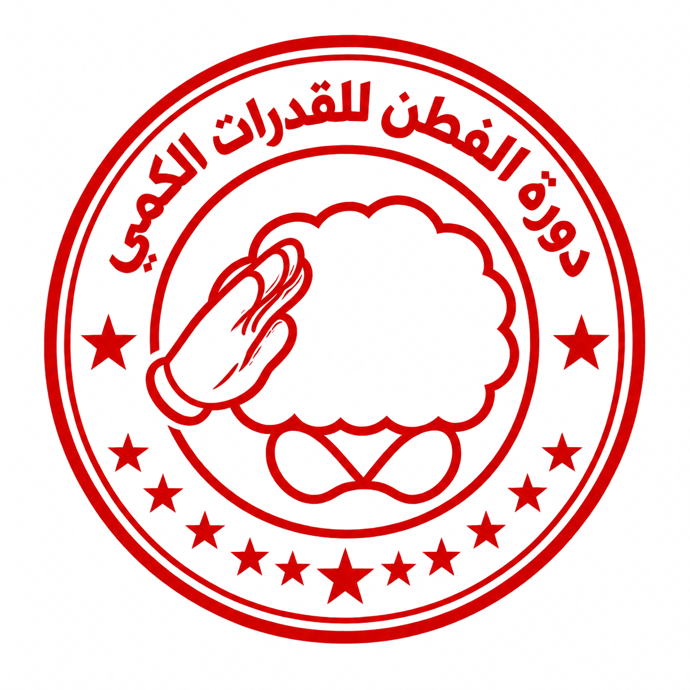
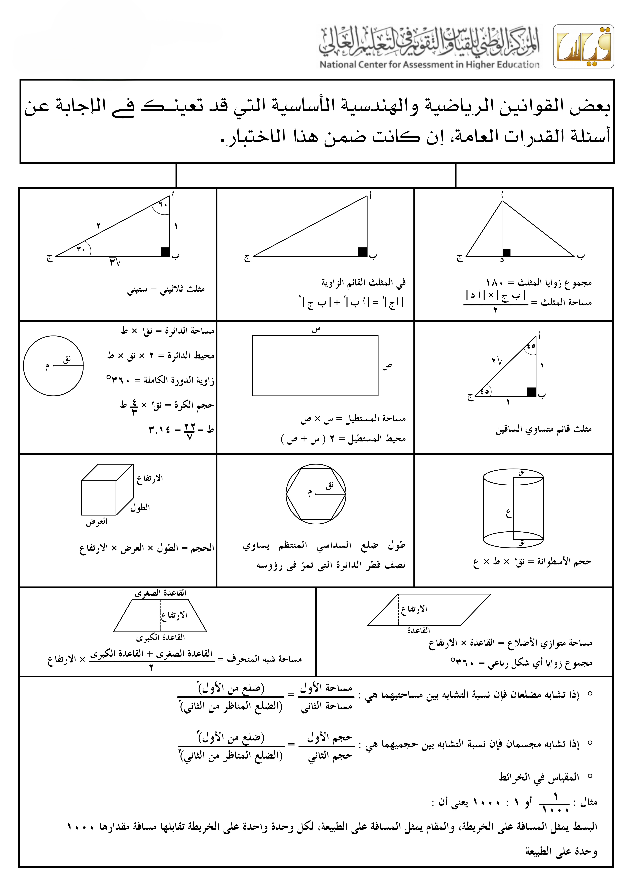

<!doctype html>
<html lang="ar" dir="rtl">
<head>
<script data-part="exam-preview-head">/* معاينة الإدارة: نفس المحرك (index.html) بلا أي تعديل — يُقدَّم الاختبار المعاين بدل data/exam.json */
(function(){
  var KEY='alfitn.examPreview.v1', W=window, sp=Storage.prototype, gi=sp.getItem, mem={};
  var m=location.pathname.match(/^(.*\/)docs\/design\/reference\/[^\/]*$/);
  if(m){ var b=document.createElement('base'); b.href=m[1]; document.head.appendChild(b); }
  /* the engine's own keys live in memory here: the real exam's saved progress is never read nor written */
  sp.getItem=function(k){ return k===KEY?gi.call(this,k):(Object.prototype.hasOwnProperty.call(mem,k)?mem[k]:null); };
  sp.setItem=function(k,v){ if(k!==KEY) mem[k]=String(v); };
  sp.removeItem=function(k){ delete mem[k]; };
  var exam=null; try{ exam=JSON.parse(gi.call(localStorage,KEY)||'null'); }catch(e){}
  var wait=[];
  W.__XP={ get exam(){ return exam; }, set exam(x){ exam=x; if(x){ wait.splice(0).forEach(function(f){ f(x); }); } } };
  document.documentElement.classList.add('xp-wait');
  var st=document.createElement('style'); st.textContent='html.xp-wait body{visibility:hidden}'; document.head.appendChild(st);
  var of=W.fetch;
  W.fetch=function(u){
    if(!/(^|\/)data\/exam\.json(\?|#|$)/.test(String(u&&u.url||u))) return of.apply(this,arguments);
    var self=this, args=arguments;
    return new Promise(function(res){
      if(exam) return res(exam);
      wait.push(res);
      setTimeout(function(){ if(!exam){ wait.splice(wait.indexOf(res)>>>0,1); res(null); } }, 4000);
    }).then(function(x){ return x ? new Response(JSON.stringify(x),{status:200,headers:{'Content-Type':'application/json'}}) : of.apply(self,args); });
  };
  W.addEventListener('message',function(e){ var d=e.data; if(e.source===W.parent&&d&&d.type==='alfitn.examPreview'&&d.exam&&!exam) W.__XP.exam=d.exam; });
})();
</script>

<meta charset="utf-8">
<meta name="viewport" content="width=device-width,initial-scale=1,viewport-fit=cover">
<title>محاكي الفطن للقدرات — جرّب الاختبار قبل يوم الاختبار</title>
<meta name="desا؟
cription" content="محاكي تدريبي مستقل لاختبار القدرات المحوسب: تجربة قريبة من الاختبار الحقيقي، تحليل مستوى بعد الانتهاء، وخطة تحسين مقترحة. غير تابع لهيئة تقويم التعليم والتدريب.">
<meta property="og:title" content="محاكي الفطن للقدرات">
<meta property="og:description" content="جرّب الاختبار قبل يوم الاختبار: محاكاة + تحليل مستوى + خطة تحسين.">
<meta property="og:type" content="website">
<meta property="og:locale" content="ar_SA">
<link rel="preconnect" href="https://fonts.googleapis.com">
<link rel="preconnect" href="https://fonts.gstatic.com" crossorigin>
<link rel="stylesheet" href="https://fonts.googleapis.com/css2?family=Noto+Sans+Arabic:wght@400;500;600;700;800;900&family=Tajawal:wght@400;500;700;800;900&family=Noto+Naskh+Arabic:wght@400;500;600;700&display=swap">
</head>
<body>
<link rel="stylesheet" href="https://cdn.jsdelivr.net/npm/katex@0.16.9/dist/katex.min.css">
<script defer src="https://cdn.jsdelivr.net/npm/katex@0.16.9/dist/katex.min.js"></script>
<style>
:root{
  --bg:#F2F4F7; --surface:#FFFFFF; --surface2:#EAEFF3; --ink:#1E2733; --muted:#5B6572; --line:#D6DDE3;
  --brand:#0A67A3; --brand-dark:#075683; --brand-ink:#FFFFFF; --brand-soft:#DCEAF5;
  --accent:#B7791F; --accent-soft:#FBF1DE;
  --good:#2E7D4F; --good-soft:#E5F3EA; --bad:#B23B3B; --bad-soft:#FAEAEA;
  --info:#EDF2F6; --info-line:#D6DDE3; --shadow:0 1px 2px rgba(20,30,45,.07);
  --f-ui:"Noto Sans Arabic",Tahoma,"Segoe UI",Arial,sans-serif; --f-display:"Noto Sans Arabic",Tahoma,"Segoe UI",Arial,sans-serif;
}
@media (prefers-color-scheme:dark){
  :root:not([data-theme="light"]){
    --bg:#131A22; --surface:#1B2530; --surface2:#212D3A; --ink:#E7ECF1; --muted:#93A0AD; --line:#33404D;
    --brand:#6FA3C9; --brand-dark:#3E6E91; --brand-ink:#0E1620; --brand-soft:#223140;
    --accent:#D9A94B; --accent-soft:#3A2E12;
    --good:#5FBE87; --good-soft:#17301F; --bad:#E28787; --bad-soft:#3A1E1E;
    --info:#1C2732; --info-line:#33404D; --shadow:0 1px 2px rgba(0,0,0,.35);
  }
}
:root[data-theme="dark"]{
  --bg:#131A22; --surface:#1B2530; --surface2:#212D3A; --ink:#E7ECF1; --muted:#93A0AD; --line:#33404D;
  --brand:#6FA3C9; --brand-dark:#3E6E91; --brand-ink:#0E1620; --brand-soft:#223140;
  --accent:#D9A94B; --accent-soft:#3A2E12;
  --good:#5FBE87; --good-soft:#17301F; --bad:#E28787; --bad-soft:#3A1E1E;
  --info:#1C2732; --info-line:#33404D; --shadow:0 1px 2px rgba(0,0,0,.35);
}
*{box-sizing:border-box}
html,body{height:100%}
body{margin:0;background:var(--bg);color:var(--ink);font-family:var(--f-ui);font-size:16px;line-height:1.7}
#app{min-height:100%;direction:rtl}
button{font:inherit;color:inherit;cursor:pointer}
:focus-visible{outline:2px solid var(--brand-dark);outline-offset:2px}
h1,h2,h3{font-family:var(--f-display);margin:0;text-wrap:balance;line-height:1.35}
.wrap{max-width:980px;margin-inline:auto;padding-inline:16px}
.demo{background:var(--accent-soft);color:var(--ink);font-size:13px;text-align:center;padding:6px 16px;border-bottom:1px solid var(--line)}
.top{display:flex;justify-content:space-between;align-items:center;padding-block:14px}
.brand{display:flex;align-items:center;gap:10px;font-family:var(--f-display);font-weight:700;font-size:19px}
.mark{width:32px;height:32px;border-radius:6px;background:var(--brand-dark);color:#fff;display:grid;place-items:center;font-size:16px}
.btn{border:1px solid transparent;border-radius:6px;padding:11px 22px;font-weight:600;background:var(--brand-dark);color:#fff;min-height:44px;transition:background-color .12s ease,border-color .12s ease}
.btn:hover{background:var(--brand)}
.btn.ghost{background:transparent;color:var(--ink);border:1px solid var(--line)}
.btn.ghost:hover{background:var(--surface2)}
.btn.warn{background:var(--accent);color:#fff}
.btn[disabled]{opacity:.45;cursor:not-allowed}
.btn.big{padding:13px 28px;font-size:16.5px}

/* ============================================================
   شاشة الدخول (Landing) — الجيل الثالث.
   إعادة تفكير كاملة بدل "صيغة الهبوط بالذكاء الاصطناعي": لا نافذة متصفح
   وهمية للمعاينة (بل شظية حقيقية من واجهة الاختبار نفسها بامتداد خارج
   الحاوية)، لا صفّ بطاقات أيقونة/عنوان/فقرة متطابقة (بل مسار بخلايا رقم
   السؤال الحقيقية من .qn)، لا فقاعات ضبابية عشوائية (بل علامة الفطن
   المائية الفعلية نفسها المستخدمة في شاشة الاختبار)، ولا شارات عائمة.
   رموز تصميم (tokens) معرّفة أولاً ثم تُبنى المكوّنات منها. كل شيء هنا
   معزول بادئة .entry/.preview/.path فلا يؤثر على أي شاشة أخرى. */
.entry{
  --e-r-sm:6px; --e-r-md:10px; --e-r-lg:16px;
  --e-sp-1:8px; --e-sp-2:16px; --e-sp-3:28px; --e-sp-4:44px; --e-sp-5:76px;
  --e-fast:120ms; --e-normal:220ms; --e-slow:420ms; --e-ease:cubic-bezier(.2,.7,.3,1);
  --e-shadow-sm:0 2px 10px -4px rgba(10,30,50,.22);
  --e-shadow-lg:0 32px 64px -24px rgba(10,30,50,.32),0 10px 22px -10px rgba(10,30,50,.15);
  --e-text-2:#3E4A57;
  position:relative;min-height:100vh;display:flex;flex-direction:column;overflow:hidden;
}
.entry-bg{position:absolute;inset:0;z-index:0;pointer-events:none;overflow:hidden;background:linear-gradient(180deg,#EEF2F6,var(--bg) 46%,#EDF1F5)}
/* نسيج حبيبي (noise) دقيق جدًا بدل أي نمط شبكي/خطوط — يمنح عمقًا ملموسًا
   يشبه الأسطح المطبوعة الفاخرة، دون أي إيحاء بورقة رسم بياني أو جدول بيانات */
.entry-noise{position:absolute;inset:-2px;opacity:.05;mix-blend-mode:multiply;background-image:url("data:image/svg+xml,%3Csvg xmlns='http://www.w3.org/2000/svg' width='140' height='140'%3E%3Cfilter id='n'%3E%3CfeTurbulence type='fractalNoise' baseFrequency='0.85' numOctaves='2' stitchTiles='stitch'/%3E%3C/filter%3E%3Crect width='100%25' height='100%25' filter='url(%23n)'/%3E%3C/svg%3E")}
/* توهجان ثابتان بدرجات أزرق/سماوي محسوبة (هوية الفطن)، ثابتان في مكانهما
   ليمنحا إحساس إضاءة محيطية دون التنافس مع توهج مؤشر الفأرة المتحرك */
.entry-aura{position:absolute;border-radius:50%;filter:blur(90px);pointer-events:none}
.entry-aura.a1{width:520px;height:520px;top:-220px;inset-inline-end:-160px;background:radial-gradient(circle,rgba(10,103,163,.16),transparent 70%)}
.entry-aura.a2{width:380px;height:380px;bottom:10%;inset-inline-start:-140px;background:radial-gradient(circle,rgba(56,163,190,.1),transparent 72%)}
/* العلامة المائية الفعلية لملكية الفطن (نفس ملف شاشة الاختبار) بحجم كبير
   وشفافية منخفضة جدًا، بدل زخرفة عامة لا علاقة لها بالمنتج */
.entry-mark{position:absolute;bottom:-8%;inset-inline-start:-6%;width:56vw;max-width:640px;min-width:360px;opacity:.045}
/* توهج يتبع مؤشر الفأرة على سطح المكتب فقط (JS يحدّث left/top)؛ القيمة
   الافتراضية تمنح توهجًا ثابتًا لطيفًا جدًا حتى بدون تتبّع (لمس/تقليل حركة) */
.entry-glow{position:absolute;width:420px;height:420px;border-radius:50%;left:58%;top:18%;transform:translate(-50%,-50%);background:radial-gradient(circle,rgba(10,103,163,.1),transparent 68%);pointer-events:none}

/* شريط علوي بلمسة زجاجية خفيفة (glass) بدل شريط مسطّح عادي، يبقى ملتصقًا
   أعلى الشاشة أثناء التمرير مع خلفية شبه شفافة وطبقة ضبابية */
.entry-top{position:sticky;top:0;z-index:5;display:flex;justify-content:space-between;align-items:center;padding:16px 28px;background:rgba(242,244,247,.62);backdrop-filter:blur(14px) saturate(1.4);-webkit-backdrop-filter:blur(14px) saturate(1.4);border-bottom:1px solid rgba(20,30,45,.06)}

.entry-hero{position:relative;z-index:1;flex:1;display:flex;align-items:center;padding:var(--e-sp-4) 28px var(--e-sp-1)}
.entry-hero-inner{max-width:1240px;margin:0 auto;width:100%;display:grid;grid-template-columns:.92fr 1.08fr;gap:56px;align-items:center}

.entry-kicker{display:inline-flex;align-items:center;gap:8px;color:var(--brand-dark);font-size:13px;font-weight:700;margin-bottom:var(--e-sp-2);padding-bottom:var(--e-sp-1);border-bottom:2px solid var(--brand-soft)}
.entry-kicker svg.i{width:14px;height:14px}

.entry-copy h1{font-size:clamp(33px,3.1vw + 14px,50px);font-weight:800;line-height:1.14;margin-bottom:var(--e-sp-1);letter-spacing:-.015em;text-wrap:balance}
.entry-copy h1 span{color:var(--brand-dark)}
.entry-copy p.lead{color:var(--e-text-2);font-size:clamp(16.5px,.5vw + 14.5px,18.5px);line-height:1.7;font-weight:500;margin:0 0 var(--e-sp-2);max-width:42ch;text-wrap:pretty}
/* السطر القيمي المختصر: يُقرأ مسحًا بلا قراءة، لا فقرة تسويقية */
.entry-value{display:flex;align-items:center;flex-wrap:wrap;gap:9px;font-size:13px;font-weight:700;color:var(--brand-dark);margin:0 0 var(--e-sp-3)}
.entry-value i{width:3px;height:3px;border-radius:50%;background:var(--muted);flex:none}

.entry-cta{display:flex;flex-direction:column;align-items:flex-start;gap:9px;margin-bottom:var(--e-sp-3)}
.entry-start{display:inline-flex;align-items:center;gap:10px;border-radius:var(--e-r-sm);box-shadow:var(--e-shadow-sm);transition:transform var(--e-normal) var(--e-ease),box-shadow var(--e-normal) var(--e-ease)}
.entry-start:hover{transform:translateY(-2px);box-shadow:0 14px 28px -10px rgba(7,86,131,.5)}
.entry-start:active{transform:translateY(0) scale(.98);transition-duration:var(--e-fast)}
.entry-start:focus-visible{outline:2px solid var(--brand-dark);outline-offset:3px}
.entry-start svg{width:17px;height:17px;transition:transform var(--e-normal) var(--e-ease)}
.entry-start:hover svg{transform:translateX(-3px)}
.entry-cta-hint{color:var(--muted);font-size:12.5px}

/* شريط مقاييس مضغوط — رقم كبير + تسمية، يدعم الزر بدل منافسته. لا بطاقات */
.entry-metrics{display:inline-flex;align-items:stretch;gap:20px}
.metric{display:flex;flex-direction:column;gap:1px}
.metric b{font-size:21px;font-weight:800;color:var(--ink);font-family:var(--f-display);font-variant-numeric:tabular-nums;line-height:1.1}
.metric span{font-size:11px;color:var(--muted)}
.metric-sep{width:1px;background:var(--line);flex:none;display:block}

/* ===== معاينة المحاكي: شظية حقيقية من واجهة الاختبار، لا نافذة متصفح وهمية.
   تمتد خارج حدود عمودها نحو حافة الصفحة (كسر شبكي مقصود) بدل الطفو في
   منتصف عمود متماثل. الظل والإمالة الخفيفة هما العنصر الوحيد "المرتفع" في
   الصفحة كاملة — كل شيء آخر مسطّح عمدًا (طبقات عمق محدودة، لا ظل لكل شيء) */
.entry-preview{position:relative;perspective:1600px;margin-inline-end:calc(-1 * clamp(40px,9vw,140px))}
.preview-win{position:relative;background:var(--surface);border-radius:var(--e-r-lg) 0 0 var(--e-r-lg);border:1px solid var(--line);border-inline-end:0;box-shadow:var(--e-shadow-lg);overflow:hidden;transform:rotateX(var(--ry,3deg)) rotateY(var(--rx,-4deg));transition:transform var(--e-normal) var(--e-ease)}
.preview-topbar{display:flex;justify-content:space-between;align-items:center;background:var(--chrome-blue,#0A67A3);color:#fff;padding:11px 18px;font-size:12px;font-weight:700}
.preview-topbar .pv-timer{font-variant-numeric:tabular-nums;letter-spacing:.02em;display:flex;align-items:center;gap:6px}
.preview-topbar .pv-timer i{width:5px;height:5px;border-radius:50%;background:#8FDB63;animation:pvBlink 1.6s step-end infinite}
.preview-qnav{position:relative;display:flex;gap:6px;background:#EBEBEB;padding:10px 18px}
.pv-q{position:relative;width:18px;height:18px;border-radius:3px;background:#fff;border:1px solid #C7C7C7;flex:none;display:block}
.pv-q.done{background:#EAF2F8;border-color:#8FAFC5}
.pv-q.cur{border-color:#0A67A3;border-width:2px;background:#DCEAF5}
.pv-q.flag{border-color:#B7791F;background:#FBF1DE}
.pv-q.flag::after{content:"";position:absolute;top:0;left:0;width:0;height:0;border-style:solid;border-width:9px 9px 0 0;border-color:#B7791F transparent transparent transparent}
.preview-body{padding:20px 18px 16px;background:#fff}
.pv-qtext{display:flex;flex-direction:column;gap:8px;margin-bottom:16px}
.pv-qtext .ln{display:block;height:10px;border-radius:5px;background:#E4E7EA}
.pv-qtext .w80{width:78%}
.pv-qtext .w60{width:52%}
.pv-opts{display:flex;flex-direction:column;gap:8px}
.pv-opt{display:flex;align-items:center;gap:10px;height:26px}
.pv-opt::before{content:"";width:15px;height:15px;border-radius:50%;border:1.5px solid #B9C1C8;flex:none}
.pv-opt::after{content:"";display:block;height:8px;border-radius:4px;background:#EEF0F2;flex:1}
.pv-opt.sel::before{border-color:var(--brand);border-width:4.5px}
.pv-opt.sel::after{background:var(--brand-soft)}
@keyframes pvBlink{50%{opacity:.25}}

/* ===== "بعد المحاكاة تعرف" — قسم مستقل بوزن بصري حقيقي، لا بطاقات فيتشر.
   نطاق خلفية بلون مائل للأزرق (لا حدود، لا ظل) يفصله بصريًا كـ"منطقة"،
   قائمة أربعة عناصر مرقّمة بخط واصل رفيع بينها + معاينة تحليل مصغّرة على
   الجهة الأخرى تستعير لغة ألوان شاشة النتائج الفعلية (good/accent) */
.entry-value-panel{position:relative;z-index:1;background:linear-gradient(180deg,rgba(220,234,245,.55),rgba(220,234,245,.18));padding:var(--e-sp-5) 28px}
.vp-inner{max-width:1080px;margin:0 auto;width:100%;display:grid;grid-template-columns:1fr 1fr;gap:64px;align-items:center}
.vp-head{font-size:12px;font-weight:700;color:var(--muted);letter-spacing:.02em;margin-bottom:10px}
.vp-title{font-size:clamp(22px,1.4vw + 14px,28px);font-weight:800;line-height:1.25;margin-bottom:var(--e-sp-2);text-wrap:balance}
.vp-list{display:flex;flex-direction:column}
.vp-item{display:flex;gap:16px;padding:15px 0;border-bottom:1px solid rgba(20,30,45,.09)}
.vp-item:first-child{padding-top:0}
.vp-item:last-child{border-bottom:0;padding-bottom:0}
.vp-item .vp-num{font-family:var(--f-display);font-weight:800;font-size:13px;color:var(--brand-dark);flex:none;width:24px;padding-top:1px}
.vp-item b{display:block;font-size:15px;font-weight:700;margin-bottom:3px}
.vp-item p{margin:0;color:var(--e-text-2);font-size:12.5px;line-height:1.6}

/* معاينة تحليل مصغّرة — شظية بصرية من شاشة النتائج نفسها، لا رسم توضيحي عام */
.vp-visual{background:var(--surface);border-radius:var(--e-r-lg);padding:26px 24px;box-shadow:var(--e-shadow-sm)}
.vp-visual-head{display:flex;justify-content:space-between;align-items:baseline;margin-bottom:18px}
.vp-visual-head b{font-size:13.5px;font-weight:700}
.vp-visual-head span{font-size:11px;color:var(--good);font-weight:700}
.ei-row{display:grid;grid-template-columns:88px 1fr 30px;align-items:center;gap:10px;margin-bottom:10px}
.ei-row span{font-size:12px;color:var(--e-text-2);font-weight:600}
.ei-row i{display:block;height:6px;border-radius:3px;background:var(--surface2);position:relative;overflow:hidden}
.ei-row i::after{content:"";position:absolute;inset-inline-start:0;top:0;bottom:0;width:var(--w,50%);border-radius:3px;background:var(--good);transition:width var(--e-slow) var(--e-ease)}
.ei-row.weak i::after{background:var(--accent)}
.ei-row b{font-size:11.5px;font-weight:700;color:var(--muted);text-align:end;font-variant-numeric:tabular-nums}

/* ===== المسار: يستبدل صفّ بطاقات الأيقونة/العنوان/الفقرة بمسار تسلسلي
   مبني من نفس لغة خلايا رقم السؤال الحقيقية (.qn) بدل أيقونات دائرية
   عامة — ملكية بصرية للمنتج نفسه، والشدّة اللونية المتصاعدة (1→4) تقود
   العين مع خط واصل رفيع بدل الاعتماد على الخط وحده */
.entry-path{position:relative;z-index:1;max-width:1040px;margin:0 auto;padding:var(--e-sp-5) 28px var(--e-sp-2);width:100%}
.path-head{font-size:12px;font-weight:700;color:var(--muted);letter-spacing:.02em;margin-bottom:var(--e-sp-3);padding-inline-start:2px}
.path-rail{position:relative;display:flex;gap:18px}
.path-rail::before{content:"";position:absolute;top:19px;inset-inline:9%;height:1px;background:linear-gradient(90deg,transparent,var(--line) 12%,var(--line) 88%,transparent);z-index:0}
.pstep{position:relative;z-index:1;flex:1;text-align:start}
.pstep .pnum{display:grid;place-items:center;width:38px;height:38px;border-radius:var(--e-r-sm);font-family:var(--f-display);font-weight:800;font-size:14px;margin-bottom:14px;border:1.5px solid var(--line);background:var(--surface);color:var(--muted);transition:background-color var(--e-normal) var(--e-ease),color var(--e-normal) var(--e-ease),border-color var(--e-normal) var(--e-ease),transform var(--e-normal) var(--e-ease)}
.pstep:nth-child(1) .pnum{background:var(--brand-soft);border-color:var(--brand-soft);color:var(--brand-dark)}
.pstep:nth-child(2) .pnum{background:#CFE3F0;border-color:#CFE3F0;color:var(--brand-dark)}
.pstep:nth-child(3) .pnum{background:#9CC3DC;border-color:#9CC3DC;color:#04324D}
.pstep:nth-child(4) .pnum{background:var(--brand-dark);border-color:var(--brand-dark);color:#fff}
.pstep:hover .pnum{transform:translateY(-3px)}
.pstep b{display:block;font-size:14.5px;font-weight:700;margin-bottom:4px}
.pstep p{margin:0;color:var(--muted);font-size:12.5px;line-height:1.6;max-width:200px;transition:color var(--e-normal) var(--e-ease)}
.pstep:hover p{color:var(--e-text-2)}

.entry-note{position:relative;z-index:1;padding:var(--e-sp-3) 20px 26px;text-align:center;color:var(--muted);font-size:11.5px;line-height:1.8}

/* دخول تدريجي لطيف عند التحميل؛ القاعدة العامة أسفل الملف
   (prefers-reduced-motion:reduce) تُعطّل كل transition/animation تلقائيًا،
   فلا حاجة لتكرارها هنا */
@keyframes entryUp{from{opacity:0;transform:translateY(12px)}to{opacity:1;transform:translateY(0)}}
.entry-anim{animation:entryUp .55s var(--e-ease) both}
.entry-kicker.entry-anim{animation-delay:.02s}
.entry-copy h1.entry-anim{animation-delay:.07s}
.entry-copy p.lead.entry-anim{animation-delay:.12s}
.entry-value.entry-anim{animation-delay:.17s}
.entry-cta.entry-anim{animation-delay:.22s}
.entry-metrics.entry-anim{animation-delay:.27s}
.entry-preview.entry-anim{animation-delay:.16s}
.vp-visual.entry-anim{animation-delay:.32s}
.vp-copy.entry-anim{animation-delay:.38s}
.entry-path .pstep:nth-child(1){animation-delay:.3s}
.entry-path .pstep:nth-child(2){animation-delay:.36s}
.entry-path .pstep:nth-child(3){animation-delay:.42s}
.entry-path .pstep:nth-child(4){animation-delay:.48s}

/* forms */
.card{background:var(--surface);border:1px solid var(--line);border-radius:8px;padding:24px;box-shadow:var(--shadow)}
.narrow{max-width:620px;margin:20px auto 40px}
.card h2{font-size:24px;margin-bottom:6px}
.card>p{color:var(--muted);margin:0 0 18px}
.grid2{display:grid;grid-template-columns:1fr 1fr;gap:14px}
.f{display:flex;flex-direction:column;gap:4px;margin-bottom:14px}
.f label{font-weight:600;font-size:14px}
.f input,.f select{font:inherit;padding:11px 12px;border:1px solid var(--line);border-radius:6px;background:var(--bg);color:var(--ink);min-height:44px;width:100%}
.f .err{color:var(--bad);font-size:13px;min-height:1px}
.chk{display:flex;gap:10px;align-items:flex-start;font-size:14px;color:var(--muted);margin:6px 0 18px}
.chk input{margin-top:6px;width:18px;height:18px}

/* ===== شاشات الاختبار: تحاكي الاختبار المحوسب الفعلي (كروم أزرق، خلفية محتوى رمادية مسطحة) ===== */
.exam{--bg:#F2F4F7;--surface:#FFFFFF;--surface2:#EAEFF3;--ink:#1A1F26;--muted:#5B6572;--line:#D6DDE3;--brand:#0A67A3;--brand-dark:#075683;--brand-ink:#FFFFFF;--brand-soft:#DCEAF5;--accent:#B7791F;--accent-soft:#FBF1DE;--good:#2E7D4F;--good-soft:#E5F3EA;--bad:#B23B3B;--bad-soft:#FAEAEA;--info:#EDF2F6;--info-line:#D6DDE3;
  --chrome:#0A67A3;--chrome2:#7AA4D3;--content-bg:#EBEBEB;--divider:#1D5C87;--timer-ink:#8FDB63;--line2:#D2D2D2;--instr-red:#C0392B;
  height:100%;min-height:100vh;display:flex;flex-direction:column;background:#fff;color:var(--ink);font-family:Tahoma,"Noto Sans Arabic",Arial,sans-serif}
.bar1{background:var(--chrome);color:#fff;display:flex;align-items:center;justify-content:space-between;gap:14px;padding:6px 20px;min-height:46px}
.bar1 .who{display:flex;align-items:center;gap:10px;font-size:15.5px;font-weight:700}
.logo{display:flex;align-items:center;gap:9px}
.logo .mk{width:26px;height:26px;border-radius:4px;background:rgba(255,255,255,.16);color:#fff;display:grid;place-items:center;font-size:14px;font-weight:700}
.logo img{height:32px;width:auto;max-width:120px;object-fit:contain;display:block}
.bar1 .tinfo{display:flex;align-items:center;gap:12px}
.bar1 .tinfo .tclock{display:flex;align-items:center;gap:6px;flex:none}
.bar1 .tinfo .meta{display:flex;align-items:center;gap:10px;font-size:12.5px;font-weight:600;opacity:.95}
.bar1 .tinfo .mdiv{width:1px;height:12px;background:rgba(255,255,255,.4);flex:none}
.timer{font-size:20px;font-weight:800;font-variant-numeric:tabular-nums;letter-spacing:.3px;color:var(--timer-ink)}
.timer.low{color:#FFC2C2}
.help ul{margin:0;padding-inline-start:22px;font-size:15px;line-height:1.75;color:var(--instr-red)}
.qtext{font-size:calc(22px * var(--fscale,1));line-height:1.55;font-weight:700;color:#141414;position:relative;z-index:1}
.qtext img{display:block;margin:10px auto 0;max-width:100%;max-height:220px;object-fit:contain}
.cmp{position:relative;z-index:1;width:100%}
.cmp-prompt{font-size:calc(18px * var(--fscale,1));font-weight:700;color:#141414;margin-bottom:10px}
.cmp-table{width:100%;table-layout:fixed;border-collapse:collapse;font-size:calc(18px * var(--fscale,1));border:2px solid var(--ink)}
.cmp-table th,.cmp-table td{width:50%;text-align:center}
.cmp-table th{font-weight:700;padding:10px 10px 12px;border-bottom:2px solid var(--ink);border-inline-start:2px solid var(--ink);color:#141414}
.cmp-table th:first-child{border-inline-start:0}
.cmp-table td{padding:13px 10px;border-inline-start:2px solid var(--ink);font-weight:600;color:#181818}
.cmp-table td:first-child{border-inline-start:0}
/* منظومة الرياضيات العربية: كل المكوّنات (أس/جذر/كسر) عناصر inline عادية
   ضمن تدفق السطر الطبيعي (لا flex ولا position:relative+top يدوي)، وتُموضَع
   فقط عبر vertical-align — بذلك تشترك تلقائيًا مع خط الأساس نفسه الذي تجلس
   عليه عناصر التشغيل العادية (+ − × ÷ =)، فلا يظهر أي رمز "عائمًا" أعلى/أسفل
   بقية التعبير. جرّبنا سابقًا flex لكل مكوّن على حدة، وأنتج ذلك عدم اتساق
   في خط الأساس عند اختلاط المكوّنات مع نص عادي/عوامل — هذا هو الإصلاح الجذري */
.arpow{direction:ltr;unicode-bidi:isolate;white-space:nowrap;font:inherit}
.arpow,.arpow *,.arfrac,.arfrac *,.arparen,.arparen *,.arpct,.ardeg{font-family:Tahoma,sans-serif}
/* النسبة المئوية: الرقم العربي-الهندي و٪ العربية وحدة واحدة معزولة RTL ← ٪ يسار الرقم دائمًا كما في الكتاب */
.arpct{direction:rtl;unicode-bidi:isolate;white-space:nowrap}
/* الدرجة: الرقم وعلامة ° وحدة واحدة معزولة LTR ← تبقى ° ملتصقة يمين الرقم كما تُطبع، بلا انعكاس bidi */
.ardeg{direction:ltr;unicode-bidi:isolate;white-space:nowrap}
.arpow-exp{font-size:.62em;vertical-align:.55em;margin-inline-end:.03em;unicode-bidi:isolate}
/* الأس والأساس وحدتان معزولتان داخل .arpow (LTR): بدونه يعيد bidi ترتيب رقم الأس العربي (AN)
   مع أساس حرفي عربي (س، ص، ٣س) فيقفز الأس يمين الأساس منفصلًا عنه. معزولين ← الأس دائمًا أعلى-يسار الأساس */
.arpow-base{unicode-bidi:isolate}
/* قوسان يحتضنان أساسًا متداخلاً (أسّ داخل أسّ مثل (٣²)²): نكبّر القوسين قليلاً
   ونرفعهما جزئيًا كي يحتضنا الأس المرتفع بصريًا، مع ضبط vertical-align للوحدة
   كاملة بدل استخدام flex، فيبقى اتساق خط الأساس مع محيط الجملة */
.arparen{font:inherit}
.arparen-b{font-size:1.25em;font-weight:400;vertical-align:-.08em}
.arparen-body{margin:0 .02em}
/* الجذر: بعد تجارب متعددة لبناء رمز جذر مخصّص (نص عادي + خط علوي يدوي، أو
   SVG مرسوم يدويًا) ظل الشكل غير متصل/متماسك بصريًا بالقدر الكافي. القرار
   النهائي: استخدام مخرجات KaTeX الأصلية لعلامة الجذر (\sqrt) فقط — محرك
   رياضيات حقيقي يبني رمزًا واحدًا متصلاً (خطّاف + خط علوي ممتد فوق كامل
   المقدار) بدل تجميع عناصر منفصلة. الأس والكسر يبقيان مكوّنين عربيين
   مخصّصين (يعملان جيدًا ولا مشكلة اتصال بصري فيهما)؛ فقط الجذر يُفوَّض لـ
   KaTeX. الأرقام داخل مخرجات KaTeX تُستبدل لاحقًا بأرقام عربية-هندية
   (انظر renderQueuedRoots) دون المساس ببنية الرمز نفسها */
.arsqrt-katex{direction:ltr;unicode-bidi:isolate}
.arsqrt-katex .katex{font-size:1.05em}
.arsqrt-katex .katex .arnum{font-family:Tahoma,sans-serif}
/* الكسر: نستخدم inline-block فقط للتكديس الرأسي (بسط/مقام) الذي لا غنى عنه،
   مع vertical-align صريح بدل flex لضبط موضعه على خط الأساس المحيط */
.arfrac{display:inline-block;font-size:.8em;text-align:center;line-height:1.2;margin:0 .05em;direction:ltr;unicode-bidi:isolate;vertical-align:-.55em}
.arfrac-num{display:block;border-bottom:.09em solid currentColor;padding:0 .14em .05em}
.arfrac-den{display:block;padding:.05em .14em 0}
/* أس كسري (٨ أسّه ١/٣): كسر رأسي صغير داخل الأس بدل الشرطة */
.arpow-exp .arfrac{font-size:1em;vertical-align:-.35em;margin:0 .02em}
.opts{display:flex;flex-direction:column;gap:5px;margin-top:8px;position:relative;z-index:1}
.opt{display:flex;align-items:center;gap:14px;background:transparent;border:0;border-radius:5px;padding:9px 10px;font-family:var(--f-ui);font-size:calc(16px * var(--fscale,1));font-weight:500;min-height:40px;width:100%;text-align:start;color:#181818}
.opt:hover{background:#EAF2F8}
.opt .dot{width:19px;height:19px;border-radius:50%;border:1.5px solid #777;flex:none;position:relative;background:#fff}
.opt .opttext{flex:1}
.opt[aria-checked="true"] .dot{border-color:var(--chrome);border-width:2px}
.opt[aria-checked="true"] .dot::after{content:"";position:absolute;inset:3px;border-radius:50%;background:var(--chrome)}
.opt[aria-checked="true"] .opttext{font-weight:700;color:var(--brand-dark)}
.bar3{background:var(--chrome);display:flex;justify-content:space-between;align-items:center;gap:10px;padding:0 20px;min-height:50px}
.bar3 .grp{display:flex;gap:4px}
svg.i{width:15px;height:15px;stroke:currentColor;fill:none;stroke-width:2;stroke-linecap:round;stroke-linejoin:round;flex:none}
.foot2{color:rgba(255,255,255,.85);font-size:12px}

/* تعليمات الاختبار */
.instructions-wrap{flex:1;display:flex;align-items:flex-start;justify-content:center;padding:44px 20px;overflow:auto}
.instr-card{max-width:640px;width:100%;background:var(--surface);border:1px solid var(--line);border-radius:8px;padding:30px 34px}
.instr-card h2{font-size:21px;margin-bottom:6px}
.instr-card>p.sub{color:var(--muted);font-size:14px;margin:0 0 22px}
/* شاشة التعليمات: عمودان — يمين نص التعليمات القابل للتمرير، يسار عمود
   فارغ بخط فاصل سميك على حده الأيمن (حد بداية العمود في RTL) */
.instr2col{flex:1;display:flex;min-height:0}
.instr-right{flex:1 1 50%;overflow-y:auto;padding:30px 40px;display:flex;flex-direction:column;gap:16px}
.instr-right h2{font-size:23px;margin:0}
.instr-plain{list-style:none;margin:0;padding:0;display:flex;flex-direction:column;gap:15px}
.instr-plain li{font-size:15px;line-height:1.75;color:var(--ink)}
.instr-closing{font-size:14px;color:var(--muted);margin:4px 0 0}
.instr-right #agree{align-self:flex-start;margin-top:4px}
.instr-left{flex:1 1 50%;border-inline-start:9px solid var(--chrome);background:#fff}
/* بطاقة القسم/العد التنازلي (نمر فقط): كتلة معلومات القسم أعلى يمين
   الجسم الأبيض، والعنصر <b> بالهيدر يتحدّث كل ثانية بلا إعادة رسم كاملة */
/* اختيار نموذج الشاشة: مفتاح تبديل كبسولي واحد (segmented control) مطابق
   للمرجع — قسمان داخل حاوية بنفسجية داكنة واحدة، لا بطاقتان منفصلتان.
   اللون مأخوذ بالعيّنة من صورة المرجع الفعلية (~rgb(46,41,133)) */
.model-card{max-width:480px;text-align:center}
.model-card h2{margin-bottom:6px}
.model-card .sub{margin-bottom:26px}
.mtoggle{display:inline-flex;background:#2E2985;border-radius:999px;padding:4px;gap:2px}
.mseg{border:0;background:transparent;color:rgba(255,255,255,.78);font-family:var(--f-ui);font-weight:700;font-size:14.5px;padding:11px 30px;border-radius:999px;cursor:pointer;transition:background-color .15s ease,color .15s ease}
.mseg:hover{color:#fff}
.mseg.active{background:#fff;color:#2E2985}
.mseg:focus-visible{outline:2px solid #fff;outline-offset:2px}
.model-hint{margin:20px 0 0;color:var(--muted);font-size:12.5px}

/* ============================================================
   نموذج نمر — مطابق لملف المرجع nimr-exam-reference.html (مصدر الحقيقة).
   يشارك محرك الاختبار بالكامل مع النموذج العادي (نفس S/handlers/المعرّفات
   #next #prev #flag #eq #rv [data-jump] [data-i] [data-fs])، والفرق قالب
   HTML وCSS فقط. كل القواعد بنطاق .theme-nimr كي لا تتسرّب للنموذج العادي.
   بدون border-radius وظلال في شاشة السؤال إلا حيث ينص المرجع (أزرار الأدوات
   5px، جدول المقارنة 12px، النوافذ 12px، أزرار النوافذ 6px). */
.theme-nimr{--chrome:#088D84;--chrome-dark:#066F68;--chrome2:#168C83;--brand:#088D84;--brand-dark:#066F68;--brand-soft:#DCEDEA;--accent:#FF7A00;--accent-soft:#FFE8D1;
  --n-teal:#33A69E;--n-blue:#347BC6;--n-panel:#C3E0FF;--n-gray:#A4A4A4;--n-prev:#FF7B00;--n-selected:#834CAF;--n-timer:#2469B4;--n-red:#EF4444;--n-cell-border:#D8D8D8;--n-flag:#347BC7;
  --f-naskh:"AbdoLine","Noto Naskh Arabic","Amiri","Traditional Arabic",serif;
  --f-ui:"Tajawal","Noto Sans Arabic",system-ui,sans-serif;
  --q-size:28px;font-family:var(--f-ui);letter-spacing:0;line-height:normal;background:#fff;color:#000}
.theme-nimr *{letter-spacing:0}

/* الهيدر والفوتر */
.theme-nimr .n-header{position:relative;height:60px;flex:none;background:var(--chrome);color:#fff;display:flex;align-items:center;padding:0 17px;user-select:none}
.theme-nimr .n-header .title{font-family:var(--f-naskh);font-size:30px;font-weight:700;line-height:44px;padding-inline-start:13px}
.theme-nimr .n-header .date{position:absolute;inset-inline:0;margin:auto;width:max-content;font-family:var(--f-naskh);font-size:36px;line-height:54px;pointer-events:none}
.theme-nimr .n-header.instructions{background:var(--chrome2)}
.theme-nimr .n-header.instructions .title{font-size:36px;font-weight:400;line-height:54px;padding:0}
.theme-nimr .n-header .countdown{position:relative;z-index:1;margin-inline-start:auto;display:flex;align-items:center;gap:8px;font-family:var(--f-naskh);font-size:20px;font-weight:700}
.theme-nimr .n-header .countdown b{font-family:var(--f-ui);font-weight:800;margin:0 6px}
.theme-nimr .n-footer{position:fixed;inset-inline:0;bottom:0;height:30px;background:var(--chrome);z-index:5}

/* شاشة تعليمات الاختبار */
.theme-nimr .n-instr{flex:0 0 auto;display:flex;height:calc(100vh - 90px);min-height:0}
.theme-nimr .n-instr .col-text{width:50%;display:flex;flex-direction:column;height:100%;min-height:0;overflow:hidden;padding:0;font-family:var(--f-naskh);color:#000}
.theme-nimr .n-instr .txt{flex:1;min-height:0;overflow-y:auto;padding-block:23px 40px;padding-inline:23px 27px}
.theme-nimr .n-instr h2{font-family:var(--f-naskh);font-size:32px;font-weight:400;margin:0 0 25px;line-height:48px}
.theme-nimr .n-instr .rules{font-size:28px;line-height:38px}
.theme-nimr .n-instr .rules span{display:block}
.theme-nimr .n-instr .wish{font-size:28px;margin:38px 0 0}
.theme-nimr .n-instr .agree-wrap{position:sticky;bottom:0;flex:none;background:#fff;padding:14px 27px}
.theme-nimr .btn-agree{width:180px;height:48px;border:0;border-radius:6px;background:var(--chrome);color:#fff;font-family:var(--f-ui);font-size:24px;font-weight:400;cursor:pointer;padding:0;box-shadow:0 2px 6px rgba(0,0,0,.15)}
.theme-nimr .btn-agree:hover{background:#067A72}
.theme-nimr .n-instr .col-empty{width:50%;border-inline-start:9.6px solid var(--chrome)}

/* بطاقة القسم (عد تنازلي) */
.theme-nimr .n-intro{flex:1;padding:20px 20px 0;font-family:var(--f-ui)}
.theme-nimr .n-intro .sec{font-family:var(--f-naskh);font-size:24px;font-weight:700;margin-bottom:6px}
.theme-nimr .n-intro .row{font-size:30px;line-height:48px}
.theme-nimr .n-intro .row .v{display:inline-block;min-width:40px;margin-inline-start:14px}

/* شاشة السؤال */
.theme-nimr .n-body{flex:1;display:flex;align-items:flex-start;gap:20px;padding-block:0 40px;padding-inline:20px 4px}
.theme-nimr .q-main{flex:1;min-width:0}
.theme-nimr .q-side{flex:0 0 350px;width:350px}
.theme-nimr .n-info{background:var(--n-panel);border:.8px solid var(--chrome2);padding:10px;font-family:var(--f-ui);font-size:24px;font-weight:400;line-height:36px;text-align:start}
.theme-nimr .q-card{margin-top:42px}
.theme-nimr .q-toolbar{height:64px;border:.8px solid #000;border-bottom:0;padding-inline:23px 13px;display:flex;align-items:center;justify-content:space-between}
.theme-nimr .q-number{font-size:22px;font-weight:500}
.theme-nimr .font-btns{display:flex;gap:12px}
.theme-nimr .font-btn{width:86px;height:43px;padding:0;border:0;border-radius:0;background:var(--n-teal);color:#fff;font-family:var(--f-ui);font-size:24px;font-weight:400;cursor:pointer}
.theme-nimr .q-box{height:306px;overflow-y:auto;border:.8px solid #333;background:#fff;padding:0 20px;font-family:var(--f-naskh);font-size:var(--q-size);scrollbar-width:thin;scrollbar-color:#1a0d8f transparent;direction:ltr}
.theme-nimr .q-box>.q-inner{direction:rtl}
.theme-nimr .qtext,.theme-classic .qtext{font-family:var(--f-naskh);font-size:var(--q-size);font-weight:400;line-height:1.5;color:#000;padding:10px 15px 0}
.theme-nimr .qtext img{display:block;margin:20px auto 0;width:auto;height:auto;max-width:min(100%,440px);max-height:250px;object-fit:contain;border-radius:5px}
.theme-nimr .opts,.theme-classic .opts{display:flex;flex-direction:column;gap:15px;padding:25px 20px;margin:0}
.theme-nimr .opt,.theme-classic .opt{display:flex;align-items:center;gap:12px;width:100%;min-height:42px;padding:0;border:0;border-radius:10px;background:transparent;color:#000;font-family:var(--f-naskh);font-size:var(--q-size);font-weight:400;line-height:1.5;text-align:start;cursor:pointer}
.theme-nimr .opt:hover,.theme-classic .opt:hover{background:transparent}
.theme-nimr .opt .dot,.theme-classic .opt .dot{flex:0 0 18px;width:18px;height:18px;border:1.6px solid #333;border-radius:50%;background:transparent}
.theme-nimr .opt[aria-checked="true"] .dot,.theme-classic .opt[aria-checked="true"] .dot{background:#333;border:1.6px solid #333}
.theme-nimr .opt[aria-checked="true"] .dot::after,.theme-classic .opt[aria-checked="true"] .dot::after{display:none}
.theme-nimr .opt .opttext,.theme-nimr .opt[aria-checked="true"] .opttext,.theme-classic .opt .opttext,.theme-classic .opt[aria-checked="true"] .opttext{flex:1;font-weight:400;color:inherit}
.theme-nimr .opt[aria-checked="true"],.theme-classic .opt[aria-checked="true"]{color:var(--n-selected)}
/* جدول المقارنة */
.theme-nimr .cmp{margin:0;padding:0}
.theme-nimr .cmp-prompt{font-family:var(--f-naskh);font-size:var(--q-size);font-weight:400;line-height:1.5;padding:10px 15px 0}
.theme-nimr .cmp-table{width:calc(100% - 20px);margin:25px 10px 0;border-collapse:separate;border-spacing:0;border:.8px solid #64748B;border-radius:12px;overflow:hidden;background:#fff}
.theme-nimr .cmp-table th{height:65px;padding:0;background:#DBE7F5;color:#1E293B;font-family:var(--f-naskh);font-size:var(--q-size);font-weight:400;border:0;border-bottom:.8px solid #64748B;text-align:center}
.theme-nimr .cmp-table td{height:102px;padding:0;background:#fff;border:0;text-align:center;font-family:"Cambria Math","STIX Two Math","Latin Modern Math",serif;font-size:var(--q-size)}
.theme-nimr .cmp-table th:first-child,.theme-nimr .cmp-table td:first-child{border-inline-end:.8px solid #64748B}
/* أزرار أسفل السؤال */
.theme-nimr .q-actions{border:.8px solid #333;border-top:0;padding:10px;display:flex;gap:20px;align-items:center}
.theme-nimr .btn-n{height:50px;padding:0;border:0;border-radius:0;color:#fff;font-family:var(--f-ui);font-size:20px;font-weight:400;display:inline-flex;align-items:center;justify-content:center;gap:10px;cursor:pointer}
.theme-nimr .btn-next{width:164px;background:var(--chrome)}
.theme-nimr .btn-prev{width:164px;background:var(--n-prev)}
.theme-nimr .btn-prev:disabled{background:var(--n-gray);cursor:default}
.theme-nimr .btn-flag{width:250px;background:var(--n-blue);margin-inline-start:auto}
.theme-nimr .btn-flag .i{width:22px;height:22px}
.theme-nimr .btn-flag.on .i{fill:#fff}

/* الشريط الجانبي */
.theme-nimr .timer-box{background:#fff;text-align:center;padding:0 0 5px;height:99px}
.theme-nimr .timer-box .lbl{font-family:var(--f-naskh);font-size:30px;line-height:45px}
.theme-nimr .timer-box .t{font-family:var(--f-naskh);font-size:46px;line-height:54px;color:var(--n-timer);direction:ltr;unicode-bidi:isolate}
.theme-nimr .timer-box .t b{font-weight:400}
.theme-nimr .timer-box .tmr{font-size:inherit;color:inherit;letter-spacing:0}
.theme-nimr .timer-box .tmr.low{color:#D92C2C}
.theme-nimr .side-block{background:var(--n-panel)}
.theme-nimr .user-info{padding:26px 10px;display:grid;gap:10px;font-family:var(--f-naskh);font-size:24px;line-height:36px}
.theme-nimr .stats{display:grid;grid-template-columns:1fr 1fr;row-gap:7px}
.theme-nimr .stat{display:flex;align-items:center;gap:10px;font-size:22px;line-height:33px}
.theme-nimr .stat .b{flex:0 0 30px;width:30px;height:30px;display:flex;align-items:center;justify-content:center;font-family:var(--f-naskh);font-size:24px;line-height:1}
.theme-nimr .b.green{background:var(--n-teal);color:#fff}
.theme-nimr .b.orange{background:var(--accent);color:#fff}
.theme-nimr .b.white{background:#fff;color:#000}
.theme-nimr .b.blue{background:var(--n-blue);color:#fff}
.theme-nimr .sep{height:5px;background:#fff}
.theme-nimr .grid-block{padding:10px 20px}
.theme-nimr .q-grid{display:grid;grid-template-columns:repeat(8,30px);gap:10px}
.theme-nimr .cell{position:relative;width:30px;height:30px;padding:0;background:#fff;border:.8px solid var(--n-cell-border);border-radius:0;display:flex;align-items:center;justify-content:center;font-family:var(--f-ui);font-size:16px;font-weight:600;color:#000;cursor:pointer}
.theme-nimr .cell.visited{background:var(--n-blue);color:#fff;border-color:var(--n-blue)}
.theme-nimr .cell.answered{background:var(--n-teal);color:#fff;border-color:var(--n-teal)}
.theme-nimr .cell.active{outline:1.6px solid var(--accent);outline-offset:0}
.theme-nimr .cell .flagico{position:absolute;inset:0;margin:auto;z-index:2;width:26px;height:26px;pointer-events:none;background:url("data:image/svg+xml,%3Csvg xmlns='http://www.w3.org/2000/svg' viewBox='0 0 24 24' fill='none' stroke='%23347bc7' stroke-width='1.8' stroke-linecap='round' stroke-linejoin='round'%3E%3Cpath d='M5 21V4'/%3E%3Cpath d='M5 4h13l-2.5 4.5L18 13H5'/%3E%3C/svg%3E") center/contain no-repeat}
.theme-nimr .cell.visited .flagico,.theme-nimr .cell.answered .flagico{background-image:url("data:image/svg+xml,%3Csvg xmlns='http://www.w3.org/2000/svg' viewBox='0 0 24 24' fill='none' stroke='%23fff' stroke-width='1.8' stroke-linecap='round' stroke-linejoin='round'%3E%3Cpath d='M5 21V4'/%3E%3Cpath d='M5 4h13l-2.5 4.5L18 13H5'/%3E%3C/svg%3E");filter:drop-shadow(0 0 1px rgba(0,0,0,.6))}
.theme-nimr .tools{padding:10px;display:grid;grid-template-columns:1fr 1fr;gap:10px}
.theme-nimr .tool{height:30px;padding:0;border:0;border-radius:5px;color:#fff;background:var(--n-teal);font-family:var(--f-naskh);font-size:16px;cursor:pointer}
.theme-nimr .tool.red{background:var(--n-red)}

@media (max-width:960px){
  .theme-nimr .n-body{flex-direction:column;align-items:stretch;padding-inline:10px}
  .theme-nimr .q-side{flex-basis:auto;width:100%}
  .theme-nimr .q-actions{flex-wrap:wrap}
  .theme-nimr .btn-flag{margin-inline-start:0}
  .theme-nimr .n-instr{flex-direction:column;height:calc(100vh - 90px);height:calc(100dvh - 90px)}
  .theme-nimr .n-instr .col-text{width:100%}
  .theme-nimr .n-instr .col-empty{display:none}
}
@media (max-width:640px){
  .theme-nimr .n-header{padding:0 12px}
  .theme-nimr .n-header .title{font-size:22px;padding-inline-start:0}
  .theme-nimr .n-header.instructions .title{font-size:26px}
  .theme-nimr .n-header .date{display:none}
  .theme-nimr .n-header .countdown{font-size:15px}
  .theme-nimr .n-instr .txt{padding:20px 16px 24px}
  .theme-nimr .n-instr .agree-wrap{padding:12px 16px}
  .theme-nimr .n-instr h2{font-size:26px;line-height:38px}
  .theme-nimr .n-instr .rules,.theme-nimr .n-instr .wish{font-size:22px;line-height:32px}
  .theme-nimr .n-intro .row{font-size:22px;line-height:36px}
  .theme-nimr .n-info{font-size:18px;line-height:28px}
  .theme-nimr .q-toolbar{padding-inline:14px 8px}
  .theme-nimr .q-number{font-size:18px}
  .theme-nimr .font-btn{width:56px;height:38px;font-size:20px}
  .theme-nimr .font-btns{gap:8px}
  .theme-nimr .btn-next,.theme-nimr .btn-prev{width:auto;flex:1}
  .theme-nimr .btn-flag{width:100%;flex:1 1 100%}
  .theme-nimr .q-actions{gap:10px}
}

/* شاشتا تعليمات الاختبار وبطاقة القسم في الأزرق = نفس قوالب وCSS نمر حرفيًا،
   والفرق الوحيد الألوان (ولذلك لا توجد هنا أي قيمة خط/حجم/مسافة) */
.theme-nimr.nimr-blue{--chrome:#1F78D9;--chrome2:#1F78D9;--brand:#1F78D9}
.theme-nimr.nimr-blue .btn-agree:hover{background:#1864B8}
.theme-nimr.nimr-blue .lightbar{height:34px;flex:none;background:#86B3EC}
.theme-nimr.nimr-blue .n-footer{height:40px}
.theme-nimr.nimr-blue .n-instr{height:calc(100vh - 134px)}
@media (max-width:960px){.theme-nimr.nimr-blue .n-instr{height:calc(100vh - 134px);height:calc(100dvh - 134px)}}

/* ============================================================
   النموذج العادي (الواجهة الزرقاء) — من classic-blue-reference.html.
   القيم مستخرجة من فيديو مصوّر (±5% لون، ±4px) فهي متغيرات في أول القاعدة.
   بنطاق .theme-classic فقط ولا يمس نمر. يغطي: التعليمات، بطاقة القسم، السؤال،
   قسم المراجعة، ونافذة تأكيد الإنهاء. */
.theme-classic{--chrome:#1F78D9;--chrome-dark:#1864B8;--chrome2:#86B3EC;--brand:#1F78D9;--brand-dark:#1864B8;--brand-soft:#D7E7FB;
  --c-blue-light:#86B3EC;--c-blue-mid:#5D9BE6;--c-sep:rgba(214,238,252,.9);--c-row-line:#CFD6DF;--c-flag:#1A4FA3;--c-flag-off:#4A4F57;--c-incomplete:#B0413E;
  --f-naskh:"AbdoLine","Noto Naskh Arabic","Amiri","Traditional Arabic",serif;--f-ui:"Tajawal","Noto Sans Arabic",system-ui,sans-serif;--q-size:clamp(24px,1.9vw,34px);--n-selected:#834CAF;font-family:var(--f-ui);color:#1B1B1B;line-height:normal;letter-spacing:0}
.theme-classic.exam{height:100vh;min-height:0}
.theme-classic .ltr{direction:ltr;unicode-bidi:isolate;display:inline-block}
.theme-classic .cl-hdr{height:48px;flex:none;background:var(--chrome);color:#fff;display:flex;align-items:center;justify-content:space-between;padding:0 18px;font-family:var(--f-ui)}
.theme-classic .cl-hdr .sec{font-size:20px;font-weight:700}
.theme-classic .cl-hdr .time{display:flex;align-items:center;gap:8px;font-size:18px;font-weight:500}
.theme-classic .cl-hdr .time b{font-weight:700}
.theme-classic .cl-hdr .tmr{direction:ltr;unicode-bidi:isolate;display:inline-block;font-size:19px;font-weight:700;color:#fff}
.theme-classic .cl-hdr .tmr.low{color:#FFC2C2}
.theme-classic .cl-bar{height:34px;flex:none;background:var(--c-blue-light);display:flex;align-items:stretch;justify-content:space-between;font-family:var(--f-ui)}
.theme-classic .cl-bar .count{display:flex;align-items:center;padding:0 18px;font-size:18px;color:#1F3B63}
.theme-classic .btn-mark{display:flex;align-items:center;gap:8px;padding:0 16px;border:0;background:var(--c-blue-mid);color:#fff;font-family:var(--f-ui);font-size:17px;cursor:pointer}
.theme-classic .btn-mark:hover{background:var(--chrome)}
.theme-classic .btn-mark .i{width:20px;height:20px}
.theme-classic .btn-mark.on .i{fill:#fff}

/* لوحتا السؤال: 50/50 وفاصل 8px */
.theme-classic .q-body{flex:1;display:flex;min-height:0}
.theme-classic .q-pane{flex:1 1 0;min-width:0;overflow-y:auto;padding:clamp(28px,2.5vw,48px);border:0;outline:0;box-shadow:none;font-family:var(--f-naskh);font-size:var(--q-size);display:flex;flex-direction:column}
.theme-classic .divider{flex:0 0 8px;background:var(--chrome)}
.theme-classic .i-pane{flex:1 1 0;min-width:0;overflow-y:auto;padding:clamp(28px,2.5vw,48px);font-family:var(--f-naskh);background:#fff}
.theme-classic .i-pane h3{margin:0 0 10px;font-family:var(--f-naskh);font-size:clamp(24px,1.9vw,32px);font-weight:700;line-height:normal;color:#111}
.theme-classic .i-pane p{margin:0;font-size:clamp(20px,1.5vw,26px);line-height:1.9;color:#333}
.theme-classic .stem-row{display:flex;gap:30px;align-items:flex-start;width:100%}
.theme-classic .stem-row .qtext{flex:1;min-width:0;padding:0;font-weight:500;line-height:1.8}
.theme-classic .fig{flex:0 1 auto;max-width:55%;background:#EFEEF6;border-radius:4px;padding:10px 18px}
.theme-classic .fig img{display:block;width:auto;height:auto;max-width:100%;max-height:clamp(200px,36vh,380px);object-fit:contain}
@media (max-width:600px){
  /* الجوال: الشكل تحت نص السؤال بعرض العمود بدل ضغطه بجانبه */
  .theme-classic .stem-row{flex-direction:column;gap:14px}
  .theme-classic .fig{max-width:100%;align-self:center}
  .theme-classic .fig img{max-height:300px}
}
.theme-classic .q-pane .opts{width:100%;padding:0;margin-top:clamp(28px,3vh,48px);gap:clamp(18px,1.6vw,28px)}
.theme-classic .q-pane .opt{font-size:clamp(22px,1.7vw,30px);line-height:1.6;gap:14px;min-height:52px;padding:10px 14px;border-radius:8px}
.theme-classic .q-pane .opt:hover{background:#F2F7FE}
.theme-classic .q-pane .opt[aria-checked="true"]{background:#E8F1FD;color:var(--n-selected)}
.theme-classic .q-pane .opt .dot{flex:0 0 .8em;width:.8em;height:.8em;border-width:2px}
.theme-classic .q-pane .opt[aria-checked="true"] .dot{border-width:2px}
.theme-classic .cmp{margin:0}
.theme-classic .cmp-prompt{margin:0;font-weight:500;font-family:var(--f-naskh);font-size:var(--q-size);line-height:2;font-weight:400;color:inherit}
.theme-classic .cmp-table{width:100%;table-layout:fixed;margin-block:clamp(24px,3vh,40px);font-size:16px;border-collapse:separate;border-spacing:0;border:1.5px solid #64748B;border-radius:12px;overflow:hidden;background:#fff}
.theme-classic .cmp-table th{height:64px;padding:0;background:#DBE7F5;color:#1E293B;font-family:var(--f-ui);font-size:clamp(20px,1.7vw,28px);font-weight:700;border:0;border-bottom:1.5px solid #64748B;text-align:center;vertical-align:middle}
.theme-classic .cmp-table td{height:clamp(110px,14vh,160px);padding:0;color:inherit;font-size:clamp(30px,2.6vw,44px);font-weight:400;text-align:center;vertical-align:middle;border:0;overflow-wrap:anywhere}
.theme-classic .cmp-table th:first-child,.theme-classic .cmp-table td:first-child{border-inline-end:1.5px solid #64748B}
.theme-classic .cmp + .opts{margin-top:0}
.theme-classic .cmp-table .arfrac{font-size:1em;line-height:1.2;margin:0 .05em;vertical-align:-.72em}
.theme-classic .cmp-table .arfrac-num{border-bottom:2.5px solid #000;padding:0 .15em .12em}
.theme-classic .cmp-table .arfrac-den{padding:.12em .15em 0}
.theme-classic .cmp-table .arpow-exp{font-size:.6em}

/* الفوتر (يبقى ظاهرًا دائمًا: sticky) */
.theme-classic .cl-ftr{position:sticky;bottom:0;z-index:3;height:40px;flex:none;background:var(--chrome);color:#fff;display:flex;align-items:stretch;justify-content:space-between;font-family:var(--f-ui)}
.theme-classic .cl-ftr .grp{display:flex}
.theme-classic .fbtn{display:flex;align-items:center;gap:8px;padding:0 18px;border:0;border-inline-start:1px solid var(--c-sep);background:none;color:#fff;font-family:var(--f-ui);font-size:17px;cursor:pointer}
.theme-classic .fbtn:first-child{border-inline-start:0}
.theme-classic .cl-ftr .grp.end .fbtn{border-inline-start:1px solid var(--c-sep)}
.theme-classic .fbtn:hover{background:var(--chrome-dark)}
.theme-classic .fbtn:disabled{opacity:.55;cursor:default;background:none}
.theme-classic .fbtn.formulas{border-inline-end:1px solid var(--c-sep)}
.theme-classic .fbtn.nav{min-width:120px;justify-content:center}
.theme-classic .fbtn.nav:last-child{min-width:100px}
.theme-classic .fbtn .i{width:16px;height:16px}
.theme-classic #rflag .i{width:20px;height:20px;fill:#fff}

/* قسم المراجعة */
.theme-classic .rv-body{flex:1;min-height:0;overflow-y:auto;display:flex;flex-direction:column}
.theme-classic .rv-title{flex:0 0 50px;height:50px;display:flex;align-items:center;justify-content:center;background:#fff;border-bottom:1px solid var(--c-row-line);font-family:var(--f-ui);font-size:21px;font-weight:500;color:#333}
.theme-classic .rv-sub{flex:0 0 36px;height:36px;display:flex;align-items:center;padding:0 18px;background:var(--c-blue-light);font-family:var(--f-ui);font-size:20px;font-weight:500;color:#fff}
.theme-classic .rv-inst{padding:16px 22px 18px;font-family:var(--f-ui);font-size:17px;line-height:1.85;color:#2B2B2B}
.theme-classic .rv-inst .gap{height:14px}
.theme-classic .rv-secbar{flex:none;height:30px;display:flex;align-items:center;justify-content:space-between;padding:0 18px;background:var(--c-blue-light);font-family:var(--f-ui);font-size:15px;color:#fff}
.theme-classic .rv-grid{display:grid;grid-template-columns:repeat(3,1fr)}
.theme-classic .rv-cell{min-height:44px;display:flex;align-items:center;gap:10px;padding:0 20px;border-bottom:1px solid var(--c-row-line);border-inline-start:1px solid var(--c-row-line);background:#fff;font-family:var(--f-ui);font-size:20px;cursor:pointer}
.theme-classic .rv-cell:nth-child(3n+1){border-inline-start:0}
.theme-classic .rv-cell:hover{background:#F1F6FD}
.theme-classic .rv-cell.dim{opacity:.35;pointer-events:none}
.theme-classic .rv-cell .st{margin-inline-start:auto;font-size:13px;color:var(--c-incomplete)}

/* نافذة تأكيد إنهاء المراجعة */
.modal.cl-end .box{max-width:520px;width:100%;padding:0;border-radius:0;background:#fff;box-shadow:0 10px 30px rgba(0,0,0,.25);overflow:hidden;font-family:"Tajawal","Noto Sans Arabic",sans-serif}
.modal.cl-end h4{margin:0;padding:10px 18px;background:#1F78D9;color:#fff;font-size:18px;font-weight:700}
.modal.cl-end p{margin:0;padding:22px 22px 8px;font-family:"Noto Naskh Arabic","Traditional Arabic",serif;font-size:18px;line-height:1.9;color:#1b1b1b}
.modal.cl-end .row{display:flex;gap:10px;justify-content:flex-end;padding:14px 22px 20px}
.modal.cl-end .row button{min-width:100px;height:38px;border:1px solid #1F78D9;background:#1F78D9;color:#fff;font-family:inherit;font-size:17px;cursor:pointer}
.modal.cl-end .row button.no{background:#fff;color:#1F78D9}

@media (max-width:900px){
  .theme-classic.exam{height:auto;min-height:100vh}
  .theme-classic .q-body{flex-direction:column;min-height:auto}
  .theme-classic .q-pane,.theme-classic .i-pane{flex:none;overflow:visible;padding:20px 18px}
  .theme-classic .i-pane{order:-1}
  .theme-classic .divider{flex-basis:6px}
  .theme-classic .rv-body{overflow:visible}
  .theme-classic .rv-grid{grid-template-columns:1fr 1fr}
  .theme-classic .rv-cell:nth-child(3n+1){border-inline-start:1px solid var(--c-row-line)}
  .theme-classic .rv-cell:nth-child(2n+1){border-inline-start:0}
  .theme-classic .fbtn{padding:0 10px;font-size:14px}
  .theme-classic .fbtn.nav{min-width:0;flex:none}
  .theme-classic .cl-hdr .time{font-size:14px}
}
@media (max-width:599px){.theme-classic .cmp-table td{font-size:28px}}


/* زر إنهاء الاختبار الكامل (نمر + الأزرق) ونوافذ التسليم */
.finish-all{flex:none;width:36px;height:36px;padding:0;border:0;border-radius:50%;background:#EF4444;color:#fff;display:grid;place-items:center;box-shadow:0 2px 6px rgba(0,0,0,.25);cursor:pointer}
.finish-all:hover{background:#DC2626}
.finish-all .i{width:16px;height:16px}
.theme-nimr .timer-box .tw{position:relative;display:inline-block}
.theme-nimr .timer-box .finish-all{position:absolute;inset-inline-end:100%;margin-inline-end:14px;top:0;bottom:0;margin-block:auto}
.theme-classic .cl-hdr .finish-all{margin-inline-start:6px}
.theme-classic .rv-cell .rvfl{width:22px;height:22px;padding:5px;margin:-5px;box-sizing:content-box;flex:none;color:#4A4F57;fill:none;stroke-width:2;cursor:pointer}
.theme-classic .rv-cell .rvfl.on{color:#1A4FA3;fill:#1A4FA3}
.modal .ltr{direction:ltr;unicode-bidi:isolate;display:inline-block}
.modal.theme-nimr .d-btn.red{background:#EF4444;border:.8px solid #EF4444}
.modal.theme-nimr.d-submit .box{max-width:640px}
.modal.theme-nimr.d-submit h3{font-family:var(--f-naskh);font-size:26px;font-weight:700;margin:0 0 12px;color:#fff}
.modal.theme-nimr .sub-txt div{margin:0 0 8px}
.modal .sub-list{margin:8px 0 12px;padding-inline-start:24px;list-style:disc}
.modal .sub-list li{margin:0 0 4px}
.modal.cl-end .cl-txt{padding:18px 22px 6px;font-family:"Noto Naskh Arabic","Traditional Arabic",serif;font-size:18px;line-height:1.9;color:#1b1b1b}
.modal.cl-end .cl-txt div{margin:0 0 6px}
.modal.cl-end.d-submit .box{max-width:640px}
.modal.cl-end .row button.red{background:#EF4444;border-color:#EF4444}

/* modal */
.modal{position:fixed;inset:0;background:rgba(15,20,26,.5);display:grid;place-items:center;padding:16px;z-index:20}
.modal .box{background:var(--surface);border-radius:8px;max-width:520px;width:100%;padding:22px;max-height:85%;overflow:auto;box-shadow:var(--shadow)}
.modal h3{font-size:20px;margin-bottom:10px}
.btn.outline-blue{background:transparent;color:#0266D6;border:1px solid #0266D6}
.btn.outline-blue:hover{background:#EAF2FC}
/* نوافذ نمر (تعليمات الاختبار وتأكيد الإنهاء تحديدًا): خلفية تركوازية
   ونص أبيض بدل الصندوق الأبيض المعتاد — نفس آلية modal() لكن بصنف إضافي
   theme-nimr على الغلاف الخارجي، فتُطبَّق متغيرات --chrome/--chrome-dark
   المعرّفة أصلاً بنطاق .theme-nimr دون أي تكرار لونيّ جديد */
.modal.theme-nimr{background:rgba(0,0,0,.4)}
.modal.theme-nimr .box{max-width:520px;width:100%;padding:40px;border-radius:12px;background:var(--chrome);color:#fff;box-shadow:0 20px 25px -5px rgba(0,0,0,.1),0 8px 10px -6px rgba(0,0,0,.1);max-height:90vh;overflow:auto;font-family:var(--f-naskh);font-size:24px;line-height:36px}
.modal.theme-nimr.d-rules .box{max-width:745px}
.modal.theme-nimr p{margin:0;color:#fff}
.modal.theme-nimr .d-btn{height:44px;padding:0;border-radius:6px;color:#fff;font-family:var(--f-naskh);font-size:24px;line-height:36px;cursor:pointer}
.modal.theme-nimr .d-btn.yes{background:#2BB8AE;border:.8px solid #2BB8AE}
.modal.theme-nimr .d-btn.no{background:transparent;border:.8px solid #fff}
.modal.theme-nimr .d-row{display:flex;gap:14px;margin-top:20px}
.modal.theme-nimr .d-row .d-btn{flex:1}
.modal.theme-nimr.d-section .box{background:#fff;color:#000;font-family:var(--f-ui);font-size:16px;line-height:normal}
.modal.theme-nimr.d-section h3{font-family:var(--f-ui);line-height:normal;font-size:26px;font-weight:400;color:#000;margin:0 0 10px}
.modal.theme-nimr.d-section p{font-size:22px;line-height:33px;color:#000;margin:0 0 10px}
.modal.theme-nimr .d-btn.outline-blue{width:100%;margin-top:10px;background:#fff;border:.8px solid #0266D6;color:#0266D6;font-family:var(--f-ui)}/* عارض صورة المعادلات: لا عنوان ولا زخرفة تغطي الصورة، الأبعاد الأصلية
   محفوظة عبر object-fit:contain، ديسكتوب=كبيرة في المنتصف، تابلت/موبايل
   تكبر تدريجيًا لتقارب ملء الشاشة مع إبقاء تمرير/تكبير اللمس الطبيعي فعّالًا */
.modal .box.img-box{background:transparent;border-radius:0;max-width:min(94vw,1080px);width:auto;padding:0;max-height:92vh;overflow:visible;box-shadow:none;display:flex;position:relative}
.formulas-img{display:block;max-width:100%;max-height:92vh;width:auto;height:auto;object-fit:contain;border-radius:8px;background:#fff;box-shadow:0 12px 44px rgba(0,0,0,.4)}
.imgx{position:absolute;top:-16px;inset-inline-end:-16px;width:36px;height:36px;border-radius:50%;background:#fff;color:#1A1A1A;border:0;font-size:20px;line-height:1;display:grid;place-items:center;cursor:pointer;box-shadow:0 2px 12px rgba(0,0,0,.35);z-index:2}
.imgx:hover{background:#F2F4F7}
.imgx:focus-visible{outline:2px solid var(--brand);outline-offset:2px}
@media (max-width:900px){
  .modal .box.img-box{max-width:98vw;max-height:95vh}
  .formulas-img{max-height:95vh}
}
@media (max-width:560px){
  .modal{padding:8px}
  .modal .box.img-box{max-width:100vw;max-height:100vh;overflow:auto}
  .formulas-img{max-height:none;border-radius:6px}
  .imgx{position:fixed;top:10px;inset-inline-end:10px}
}
.modal ul{padding-inline-start:20px;margin:0 0 16px}
.toast{position:fixed;inset-inline:16px;bottom:calc(16px + env(safe-area-inset-bottom,0px));margin-inline:auto;max-width:480px;background:var(--ink);color:var(--bg);padding:12px 16px;border-radius:6px;z-index:30;text-align:center;font-size:14px}

/* results */
.res{padding-block:22px 40px}
.skills{display:flex;flex-direction:column;gap:12px}
.path{margin-top:26px;border:1px solid var(--brand-dark);border-radius:8px;padding:22px;background:var(--surface)}
.path h2{font-size:24px}
.plan{margin:14px 0 0;padding:0;list-style:none;display:grid;gap:8px}
.plan li{display:flex;gap:12px;background:var(--bg);border-radius:6px;padding:10px 12px}
.plan li b{min-width:74px;color:var(--brand-dark)}
details{border-top:1px solid var(--line);padding-top:8px}
summary{cursor:pointer;font-weight:600;color:var(--brand-dark)}
details ul{margin:8px 0 0;padding-inline-start:20px;color:var(--muted);font-size:14px}
.note{color:var(--muted);font-size:13px;margin-top:18px}

/* نتائج: تحليل الأداء */
.stat-row{display:grid;grid-template-columns:repeat(5,1fr);border:1px solid var(--line);border-radius:8px;overflow:hidden;margin:18px 0 10px;background:var(--surface)}
.stat-tile{padding:14px 8px;text-align:center;border-inline-start:1px solid var(--line)}
.stat-tile:first-child{border-inline-start:0}
.stat-tile b{display:block;font-size:21px;font-family:var(--f-display);color:var(--ink);font-variant-numeric:tabular-nums}
.stat-tile span{font-size:11.5px;color:var(--muted)}
.stat-tile.good b{color:var(--good)}
.stat-tile.bad b{color:var(--bad)}
.disclaimer{font-size:12.5px;color:var(--muted);background:var(--surface2);border-radius:6px;padding:10px 14px;margin:0 0 8px}
.section-h{font-size:18px;font-weight:700;margin:28px 0 4px}
.section-sub{color:var(--muted);font-size:13.5px;margin:0 0 12px}
.skillrow{display:grid;grid-template-columns:130px 1fr 60px 90px;gap:12px;align-items:center;padding:9px 0;border-bottom:1px solid var(--line);font-size:14.5px}
.skillrow:last-child{border-bottom:0}
.skillbar{height:9px;background:var(--surface2);border-radius:5px;overflow:hidden}
.skillbar i{display:block;height:100%;border-radius:5px}
.skillbar i.good{background:var(--good)}
.skillbar i.warn{background:var(--accent)}
.skillbar i.bad{background:var(--bad)}
.skillrow b{text-align:end;font-variant-numeric:tabular-nums;font-weight:600}
.skillrow .lvl{font-size:11px;font-weight:700;padding:3px 8px;border-radius:20px;text-align:center}
.skillrow .lvl.good{color:var(--good);background:var(--good-soft)}
.skillrow .lvl.warn{color:#7A5410;background:var(--accent-soft)}
.skillrow .lvl.bad{color:var(--bad);background:var(--bad-soft)}
.factrow{display:flex;gap:12px;background:var(--surface);border:1px solid var(--line);border-radius:8px;padding:13px 16px;margin-bottom:8px}
.factrow .dot{width:8px;height:8px;border-radius:50%;flex:none;margin-top:7px}
.factrow.good .dot{background:var(--good)}
.factrow.warn .dot{background:var(--accent)}
.factrow.bad .dot{background:var(--bad)}
.factrow h4{margin:0 0 3px;font-size:14.5px}
.factrow p{margin:0;color:var(--muted);font-size:13.5px;line-height:1.7}
.weekplan{margin:12px 0 14px;padding:0;list-style:none;display:grid;gap:8px}
.weekplan li{display:flex;gap:14px;background:var(--surface);border:1px solid var(--line);border-radius:8px;padding:12px 16px}
.weekplan li b{min-width:82px;color:var(--brand-dark);flex:none}
.weekplan li span{color:var(--ink);font-size:14px;line-height:1.7}
.next-step{border:2px solid var(--brand-dark);border-radius:8px;padding:22px;background:var(--surface);margin-top:26px}
.next-step h3{font-size:19px;margin-bottom:8px}
.next-step p{color:var(--muted);margin:0 0 16px;line-height:1.8}
.next-step .actions{display:flex;gap:10px;flex-wrap:wrap}
@media print{
  body *{visibility:hidden}
  .printable,.printable *{visibility:visible}
  .printable{position:absolute;inset:0;padding:24px}
  .no-print{display:none!important}
}

/* ===== لوحي / آيباد: تخطيط خاص به، ليس مجرد سطح مكتب مصغّر أو جوّال مكبّر ===== */
@media (min-width:761px) and (max-width:1024px){
  /* رأس مضغوط بصفّين مثل الجوال، لأن عرض اللوحي لا يكفي لسطر واحد بخط مقروء */
  .bar1{flex-wrap:wrap;row-gap:6px;padding:8px 18px;min-height:auto}
  .bar1 .who{flex:1 1 100%;min-width:0}
  .bar1 .who span{overflow:hidden;text-overflow:ellipsis;white-space:nowrap;max-width:100%}
  .bar1 .tinfo{flex:1 1 100%;justify-content:space-between}

          
        .qtext{font-size:calc(23px * var(--fscale,1));line-height:1.6}
  .qtext img{max-height:240px}

  /* شاشة الدخول في اللوحي: عمود واحد متمركز، والمعاينة بعرض محتوى (بلا
     امتداد خارج الحاوية الذي يناسب سطح المكتب الواسع فقط) */
  .entry-hero-inner{grid-template-columns:1fr;gap:36px;text-align:center;max-width:600px}
  .entry-copy{display:flex;flex-direction:column;align-items:center}
  .entry-copy p.lead{max-width:48ch}
  .entry-value,.entry-cta{align-items:center}
  .entry-metrics{margin-inline:auto}
  .entry-preview{max-width:440px;margin:0 auto;width:100%}
  .preview-win{transform:none;border-radius:var(--e-r-lg)}
  .vp-inner{grid-template-columns:1fr;gap:32px;text-align:center}
  .vp-item{text-align:start}
  .entry-path{max-width:640px}
  .pstep p{max-width:170px}
}
@media (max-width:760px){
  /* شاشة الدخول: عمود واحد، أهداف لمس أكبر، ونص/شريط مقاسة لعرض الجوال
     بدل تصغير تخطيط سطح المكتب حرفيًا. المسار يتحوّل من أفقي إلى عمودي
     (خط واصل رأسي + خلية رقم ونص جنبًا إلى جنب) لأنه الشكل الطبيعي لسرد
     تسلسلي على شاشة ضيّقة، لا مجرد ضغط الأعمدة الأربعة */
  .entry-top{padding:14px 18px}
  .entry-hero{padding:16px 18px 4px}
  .entry-hero-inner{grid-template-columns:1fr;gap:26px;text-align:center}
  .entry-copy{display:flex;flex-direction:column;align-items:center}
  .entry-kicker{font-size:12px}
  .entry-copy h1{font-size:clamp(27px,7.5vw,33px)}
  .entry-copy p.lead{font-size:15px;line-height:1.65;max-width:34ch}
  .entry-value{justify-content:center}
  .entry-cta{align-items:stretch;width:100%;margin-bottom:var(--e-sp-2)}
  .entry-start{width:100%;justify-content:center;min-height:50px}
  .entry-cta-hint{text-align:center}
  .entry-metrics{justify-content:center;width:100%;gap:16px}
  .metric{align-items:center}
  .entry-preview{max-width:320px;margin:0 auto;width:100%}
  .preview-win{transform:none;border-radius:var(--e-r-lg)}

  .entry-value-panel{padding:var(--e-sp-4) 18px}
  .vp-inner{grid-template-columns:1fr;gap:28px}
  .vp-visual{padding:20px 18px}
  .vp-copy{text-align:center}
  .vp-item{text-align:start}

  .entry-path{padding:var(--e-sp-4) 20px 4px}
  .path-head{text-align:center;margin-bottom:24px}
  .path-rail{flex-direction:column;gap:22px;max-width:320px;margin:0 auto}
  .path-rail::before{top:0;bottom:0;inset-inline-start:18px;inset-inline-end:auto;width:1px;height:auto;background:linear-gradient(180deg,transparent,var(--line) 10%,var(--line) 90%,transparent)}
  .pstep{display:flex;flex-direction:row;text-align:start;align-items:flex-start;gap:14px}
  .pstep .pnum{margin-bottom:0;flex:none}
  .pstep p{max-width:none}
  .entry-note{padding:14px 18px 22px;font-size:11.5px}

  /* الصفحة الرئيسية والنتائج */
  .stat-row{grid-template-columns:repeat(2,1fr)}
  .stat-tile:nth-child(3){border-inline-start:0}
  .skillrow{grid-template-columns:1fr;gap:4px;text-align:center}
  .skillrow b,.skillrow .lvl{justify-self:center}
  .grid2{grid-template-columns:1fr}
    .skills{width:100%}
    .next-step .actions{flex-direction:column}
  .next-step .actions .btn{width:100%;text-align:center}
  .instr-card{padding:22px 20px}

  /* الرأس: صفّان مضغوطان بدل ازدحام سطر واحد */
  .bar1{flex-wrap:wrap;row-gap:4px;padding:6px 14px;min-height:auto}
  .bar1 .who{flex:1 1 100%;min-width:0}
  .bar1 .who span{overflow:hidden;text-overflow:ellipsis;white-space:nowrap;max-width:100%}
  .bar1 .tinfo{flex:1 1 100%;justify-content:space-between}
  .timer{font-size:16px}

        
                .qtext{font-size:calc(18px * var(--fscale,1));line-height:1.45}
  .qtext img{max-height:150px;margin-top:6px}
  .cmp-prompt{font-size:calc(15.5px * var(--fscale,1));margin-bottom:6px}
  .cmp-table{font-size:calc(14.5px * var(--fscale,1))}
  .cmp-table td{padding:8px 6px}
  .opts{gap:4px;margin-top:6px}
  .opt{font-size:calc(15.5px * var(--fscale,1));min-height:40px;padding:7px 10px}
    .help ul{font-size:13.5px;line-height:1.55}
      
  /* الشريط السفلي: صفّان بأزرار كاملة العرض ومريحة للمس */
  .bar3{flex-direction:column;padding:7px 14px;gap:6px;min-height:auto}
  .bar3 .grp{width:100%;gap:6px}
          
                    .instructions-wrap{padding-inline:14px}
}
@media (prefers-reduced-motion:reduce){*{transition:none!important;animation:none!important}}
/* خط واحد لكل محتوى السؤال المعروض للطالب (النص، الخيارات، المقارنة، وكل أجزاء الرياضيات: أساس، أس، بسط، مقام، جذر، ٪):
   Tahoma — مثل مظهر الشرائح العربية. أجزاء الرياضيات يختلف حجمها/موضعها فقط، لا خطها */
.theme-nimr .qtext,.theme-classic .qtext,.theme-nimr .opt,.theme-classic .opt,.theme-nimr .cmp-prompt,.theme-classic .cmp-prompt,
.theme-nimr .cmp-table th,.theme-classic .cmp-table th,.theme-nimr .cmp-table td,.theme-classic .cmp-table td{font-family:Tahoma,sans-serif}
.qtext .arsqrt-katex .katex *,.opt .arsqrt-katex .katex *,.cmp-table .arsqrt-katex .katex *,.cmp-prompt .arsqrt-katex .katex *{font-family:Tahoma,sans-serif}
</style>

<div id="app" dir="rtl" lang="ar"></div>

<script>
/* ============================================================
   الإعدادات: كل ما تغيّره أنت موجود هنا
   ============================================================ */
const CONFIG = {
  brand: "الفطن",
  logoUrl: "assets/branding/iftn-logo.png", // رابط شعار الفطن (صورة). إذا فاضي يظهر رمز "ف"
  requireRegistration: false,    // التسجيل مؤجل. فعّله لاحقاً بتغييرها إلى true
  arabicDigits: true,            // أرقام الأسئلة بالشكل العربي ٠١٢ مثل الاختبار الحقيقي
  productName: "محاكي اختبار الفطن",
  secondsPerQuestion: 60,        // وقت السؤال الواحد. وقت القسم = عدد أسئلته × هذا الرقم
  allowBackWithinSection: true,  // الرجوع للأسئلة السابقة داخل نفس القسم
  lockSectionAfterFinish: true,  // بعد إنهاء القسم لا يرجع له
  reviewBeforeNextSection: true, // شاشة مراجعة في نهاية كل قسم
  shuffleOptions: false,
  showExplanations: false,
  warnSecondsLeft: 60,           // يتحول المؤقت للأصفر قبل النهاية بهذي المدة
  pathThresholds: { foundation: 8, strengthen: 14 }, // من 20: ≤8 تأسيس، ≤14 تقوية، فوق ذلك صقل
  urgentIfDaysLeftAtMost: 14,    // إذا باقي على الاختبار أقل من هذا العدد من الأيام يدخل مسار المستعجل
  leadsEndpoint: "",             // رابط Google Apps Script الذي يحفظ النتائج في Google Sheet (اتركه فاضياً الآن)
  links: { course: "#", consult: "#" }, // تُربط بصفحة الدورة وجلسة الاستشارة في منصة دورة
  formulas: [ // محتوى زر المعادلات
    "مساحة المستطيل = الطول × العرض",
    "مساحة المثلث = ½ × القاعدة × الارتفاع",
    "مساحة الدائرة = π × نق²",
    "محيط الدائرة = 2 × π × نق",
    "السرعة = المسافة ÷ الزمن",
    "المتوسط = مجموع القيم ÷ عددها"
  ]
};

/* ============================================================
   مصدر بيانات الاختبار
   الأسئلة لم تعد مكتوبة داخل هذا الملف. تُحمَّل من data/exam.json
   عبر fetchExamData(). الملف يتبع Schema ثابت (examId/title/sections/
   questions بحقول id/type/text/imageUrl/options/correctAnswer/skill/
   difficulty/source). الصور لا تُخزَّن داخل JSON، فقط imageUrl.

   نقطة الاستبدال المستقبلية بـ API: غيّر تنفيذ fetchExamData() فقط
   ليجلب من خادم بدل الملف المحلي (نفس الشكل المُعاد: examId/title/
   sections). دالة normalizeExam() تحوّل أي مصدر بيانات متوافق مع
   الـ Schema إلى الشكل الداخلي (t/o/a/img/kind) الذي تتعامل معه
   شاشات العرض (exam/review/compute)، فهذه الشاشات لا تحتاج أي
   تعديل عند تغيير المصدر.
   ============================================================ */
const DATA_SOURCE_URL = "data/exam.json";
let EXAM_META = { examId:null, title:"" };
let SECTIONS = [];

async function fetchExamData(){
  const res = await fetch(DATA_SOURCE_URL, { cache:"no-store" });
  if(!res.ok) throw new Error("HTTP "+res.status);
  return res.json();
}

function normalizeExam(raw){
  return (raw.sections||[]).map(sec=>({
    id: sec.id,
    title: sec.title,
    durationSeconds: sec.durationSeconds || (sec.questions||[]).length*CONFIG.secondsPerQuestion,
    questions: (sec.questions||[]).map(q=>({
      id: q.id,
      kind: (q.type==="compare"||q.type==="comparison") ? "comparison" : (q.type==="math" ? "math" : "mc"),
      t: q.text,
      img: q.imageUrl || null,
      o: q.options,
      a: q.correctAnswer,
      skill: q.skill,
      difficulty: q.difficulty,
      source: q.source,
      instructions: q.instructions || null,
      prompt: q.prompt || null,
      valueA: q.valueA!=null ? q.valueA : null,
      valueB: q.valueB!=null ? q.valueB : null
    }))
  }));
}

/* تعليمات افتراضية حسب نوع السؤال، تظهر يسار الشاشة.
   أي سؤال يقدر يعطي مصفوفة "instructions" خاصة فيه (schema) لتجاوز الافتراضي —
   هذا يجهّز الواجهة لإدارة محتوى مستقبلية بدون تعديل الكود. */
const INSTR_DEFAULTS = {
  mc:["اقرأ السؤال جيدًا وحدد المطلوب.","اختر إجابة واحدة فقط من الخيارات الموضحة.","يمكنك تعيين السؤال للمراجعة والعودة إليه قبل إنهاء القسم."],
  comparison:["قارن بين القيمة الأولى والقيمة الثانية.","حدد العلاقة الصحيحة بين القيمتين.","اقرأ القيم والرموز الرياضية بعناية قبل الاختيار."],
  geometry:["تأمل الشكل والمعطيات الموضحة فيه جيدًا.","استخدم المعلومات الموجودة في الشكل للوصول إلى الإجابة الصحيحة.","اختر إجابة واحدة فقط من الخيارات."],
  math:["اقرأ التعبير الرياضي بدقة قبل البدء.","انتبه للأسس والجذور والكسور كما هي مكتوبة.","اختر إجابة واحدة فقط من الخيارات المتاحة."]
};
function defaultInstructionsFor(q){
  if(q.kind==="comparison") return INSTR_DEFAULTS.comparison;
  if(q.kind==="math") return INSTR_DEFAULTS.math;
  if(q.img) return INSTR_DEFAULTS.geometry;
  return INSTR_DEFAULTS.mc;
}

const PATHS = {
  urgent:{ name:"مسار المستعجل", lead:"اختبارك قريب، فنركّز على الأعلى تكراراً والأسرع مكسباً.",
    plan:[["اليوم 1-2","أعلى مهارتين ضعفاً عندك، درس قصير + 10 أسئلة"],["اليوم 3-5","حل موقّت بوقت الاختبار الحقيقي"],["قبل الاختبار","مراجعة أخطائك فقط، بدون مواضيع جديدة"]],
    main:"consult", mainTitle:"استشارة سريعة", mainText:"نقعد على نتيجتك ونرتّب لك خطة الأيام الباقية.",
    more:["نراجع اختبارك سؤالاً سؤالاً","نحدد أين تضيع الدرجات بالضبط","خطة يومية على عدد الأيام الباقية"] },
  foundation:{ name:"مسار التأسيس", lead:"نبدأ من الأساس بخطوات صغيرة، ولا شيء يفوتك.",
    plan:[["الأسبوع 1","الأعداد والكسور من الصفر"],["الأسبوع 2","الأسس والجذور والمعادلات"],["الأسبوع 3","النسب والمسائل ثم اختبار قياس ثاني"]],
    main:"course", mainTitle:"دورة الفطن للقدرات الكمي", mainText:"شرح مبسّط من الأساس يناسب من يجد المراجع الأخرى صعبة.",
    more:["شرح تدريجي من الصفر","تمارين بعد كل درس","إمكانية حجز استشارة لأي نقطة"] },
  strengthen:{ name:"مسار التقوية", lead:"عندك أساس جيد. نقوّي نقاط الضعف فقط ولا نعيد ما تعرفه.",
    plan:[["اليوم 1-3","المهارة الأضعف عندك: شرح + تمارين"],["اليوم 4-6","المهارة الثانية + اختبار قصير"],["اليوم 7","اختبار شامل جديد وقياس التقدم"]],
    main:"course", mainTitle:"دروس المهارات الضعيفة", mainText:"ندخل مباشرة على الدروس اللي تحتاجها من الدورة.",
    more:["تختار الدروس حسب نتيجتك","تمارين موجّهة لنقاط ضعفك","استشارة إذا تكرر نفس الخطأ"] },
  polish:{ name:"مسار الصقل والسرعة", lead:"مستواك قوي. الفرق الآن في السرعة وتقليل الأخطاء.",
    plan:[["يومياً","10 أسئلة صعبة بوقت محدد"],["أسبوعياً","اختبار كامل مع تحليل الأخطاء"],["قبل الاختبار","تدريب على إدارة الوقت"]],
    main:"consult", mainTitle:"متابعة خاصة", mainText:"نحلل أخطاءك وسرعتك ونضبط الأسلوب.",
    more:["تحليل زمن كل سؤال","أساليب اختصار الحل","متابعة حتى يوم الاختبار"] }
};

/* ============================================================ */
const $app = document.getElementById("app");
const S = { screen:"landing", user:{}, sec:0, q:0, answers:{}, flags:{}, times:{}, secLeft:0, qStart:0, timer:null, fscale:1, finished:false, review:false, examTheme:"classic" };

const ICON = {
  flag:'<svg class="i" viewBox="0 0 24 24"><path d="M5 21V4"/><path d="M5 4h11l-2 4 2 4H5"/></svg>',
  next:'<svg class="i" viewBox="0 0 24 24"><path d="M15 6l-6 6 6 6"/></svg>',
  prev:'<svg class="i" viewBox="0 0 24 24"><path d="M9 6l6 6-6 6"/></svg>',
  grid:'<svg class="i" viewBox="0 0 24 24"><rect x="4" y="4" width="6" height="6"/><rect x="14" y="4" width="6" height="6"/><rect x="4" y="14" width="6" height="6"/><rect x="14" y="14" width="6" height="6"/></svg>',
  sigma:'<svg class="i" viewBox="0 0 24 24"><path d="M18 5H6l6 7-6 7h12"/></svg>',
  clock:'<svg class="i" viewBox="0 0 24 24"><circle cx="12" cy="12" r="9"/><path d="M12 7v5l3 2"/></svg>',
  check:'<svg class="i" viewBox="0 0 24 24"><path d="M5 13l4 4L19 7"/></svg>',
  close:'<svg class="i" viewBox="0 0 24 24"><path d="M6 6l12 12M18 6L6 18"/></svg>',
  circleArrowL:'<svg class="i" viewBox="0 0 24 24"><circle cx="12" cy="12" r="10"/><path d="M16 12H8M12 8l-4 4 4 4"/></svg>',
  listCheck:'<svg class="i" viewBox="0 0 24 24"><path d="M3 6l1.5 1.5L7.5 4.5M3 13l1.5 1.5L7.5 11.5M11 6h10M11 13h10M11 20h10"/></svg>',
  power:'<svg class="i" viewBox="0 0 24 24"><path d="M12 2v9"/><path d="M17.7 6.3a8 8 0 1 1-11.4 0"/></svg>',
  arR:'<svg class="i" viewBox="0 0 24 24"><path d="M4 12h16M14 6l6 6-6 6"/></svg>',
  arL:'<svg class="i" viewBox="0 0 24 24"><path d="M20 12H4M10 6l-6 6 6 6"/></svg>',
  help:'<svg class="i" viewBox="0 0 24 24"><circle cx="12" cy="12" r="9"/><path d="M9.5 9.5a2.5 2.5 0 1 1 3.5 2.3c-.6.3-1 .9-1 1.6M12 17h.01"/></svg>',
  list:'<svg class="i" viewBox="0 0 24 24"><path d="M8 6h13M8 12h13M8 18h13"/><path d="M3 6h.01M3 12h.01M3 18h.01"/></svg>'
};
const AR = "أبجد";
const esc = s => String(s).replace(/[&<>"']/g,c=>({"&":"&amp;","<":"&lt;",">":"&gt;",'"':"&quot;","'":"&#39;"}[c]));
const fmt = s => { s=Math.max(0,s); return String(Math.floor(s/60)).padStart(2,"0")+":"+String(s%60).padStart(2,"0"); };
const key = (s,q)=>s+"-"+q;
function toast(m){ const t=document.createElement("div"); t.className="toast"; t.textContent=m; document.body.appendChild(t); setTimeout(()=>t.remove(),2600); }
function store(k,v){ try{ localStorage.setItem(k,JSON.stringify(v)); }catch(e){} }
function load(k){ try{ return JSON.parse(localStorage.getItem(k)||"null"); }catch(e){ return null; } }

/* ---------- حفظ واستعادة تقدم الاختبار الجاري (وليس النتيجة النهائية) ---------- */
const PROGRESS_KEY = "alfitn_progress_v1";
function saveProgress(){
  if(S.screen!=="exam" && S.screen!=="review") return;
  store(PROGRESS_KEY, {
    examId: EXAM_META.examId,
    screen: S.screen,
    sec: S.sec, q: S.q,
    answers: S.answers, flags: S.flags, times: S.times, visited: S.visited,
    secLeft: S.secLeft, filter: S.filter, user: S.user, examTheme: S.examTheme,
    savedAt: Date.now()
  });
}
function clearProgress(){ try{ localStorage.removeItem(PROGRESS_KEY); }catch(e){} }
function loadProgress(){
  const d = load(PROGRESS_KEY);
  if(!d || d.examId!==EXAM_META.examId) return null;
  return d;
}

/* عند الربط الحقيقي: هنا يُرسل التسجيل إلى قاعدة البيانات ثم إلى منصة دورة */
function submitLead(payload){
  const all = load("alfitn_leads") || []; all.push(payload); store("alfitn_leads", all);
  if(CONFIG.leadsEndpoint){
    try{ fetch(CONFIG.leadsEndpoint,{method:"POST",mode:"no-cors",headers:{"Content-Type":"text/plain;charset=utf-8"},body:JSON.stringify(payload)}).catch(()=>{}); }catch(e){}
  }
}

/* ---------- الشاشات ---------- */
function landing(){
  const total=SECTIONS.reduce((a,s)=>a+s.questions.length,0);
  const minutes=Math.round(SECTIONS.reduce((a,s)=>a+(s.durationSeconds||0),0)/60);
  /* عبارة الزر المساعدة لا تدّعي شيئًا غير صحيح: تعتمد فعليًا على
     CONFIG.requireRegistration بدل نص ثابت قد يصبح غير دقيق لو تغيّر الإعداد */
  const ctaHint = CONFIG.requireRegistration ? "خطوة تسجيل سريعة قبل البدء" : "ابدأ مباشرة، بدون تسجيل";
  $app.innerHTML = `
  <div class="entry">
    <div class="entry-bg" aria-hidden="true">
      <span class="entry-noise"></span>
      <span class="entry-aura a1"></span>
      <span class="entry-aura a2"></span>
      
      <span class="entry-glow" id="entryGlow"></span>
    </div>
    <div class="entry-top"><div class="brand">${brandMark()}${CONFIG.brand}</div></div>
    <div class="entry-hero">
      <div class="entry-hero-inner">
        <div class="entry-copy">
          <span class="entry-kicker entry-anim">${ICON.clock}جرّب الاختبار قبل يوم الاختبار</span>
          <h1 class="entry-anim">محاكي الفطن <span>للقدرات</span></h1>
          <p class="lead entry-anim">تجربة قريبة من اختبار القدرات المحوسب تساعدك تعرف مستواك، نقاط قوتك، وأولوياتك قبل الاختبار الحقيقي.</p>
          <div class="entry-value entry-anim"><span>محاكاة</span><i></i><span>تحليل مستوى</span><i></i><span>خطة تحسين</span></div>
          <div class="entry-cta entry-anim">
            <button class="btn big entry-start" id="start" data-event="start_simulation">ابدأ المحاكاة${ICON.next}</button>
            <span class="entry-cta-hint">${ctaHint}</span>
          </div>
          <div class="entry-metrics entry-anim">
            <div class="metric"><b data-count="${SECTIONS.length}">${dg(0)}</b><span>أقسام</span></div>
            <i class="metric-sep"></i>
            <div class="metric"><b data-count="${total}">${dg(0)}</b><span>سؤالًا</span></div>
            <i class="metric-sep"></i>
            <div class="metric"><b data-count="${minutes}">${dg(0)}</b><span>دقيقة تقريبًا</span></div>
          </div>
        </div>
        <div class="entry-preview entry-anim" aria-hidden="true">
          <div class="preview-win" id="previewWin">
            <div class="preview-topbar"><span class="pv-timer"><i></i>٠٦:٠٠</span><span>القسم الأول: الأعداد والكسور</span></div>
            <div class="preview-qnav"><i class="pv-q done"></i><i class="pv-q done"></i><i class="pv-q cur"></i><i class="pv-q"></i><i class="pv-q flag"></i><i class="pv-q"></i></div>
            <div class="preview-body">
              <div class="pv-qtext"><span class="ln w80"></span><span class="ln w60"></span></div>
              <div class="pv-opts"><span class="pv-opt sel"></span><span class="pv-opt"></span><span class="pv-opt"></span><span class="pv-opt"></span></div>
            </div>
          </div>
        </div>
      </div>
    </div>
    <div class="entry-value-panel">
      <div class="vp-inner">
        <div class="vp-visual entry-anim" aria-hidden="true">
          <div class="vp-visual-head"><b>معاينة تحليلك بعد الانتهاء</b><span>مثال</span></div>
          <div class="ei-row"><span>الأعداد</span><i style="--w:78%"></i><b>قوي</b></div>
          <div class="ei-row"><span>الأسس والجذور</span><i style="--w:55%"></i><b>جيد</b></div>
          <div class="ei-row weak"><span>النسب والمسائل</span><i style="--w:32%"></i><b>أولوية</b></div>
        </div>
        <div class="vp-copy entry-anim">
          <div class="vp-head">بعد المحاكاة تعرف</div>
          <h2 class="vp-title">مو بس درجة — تفهم وضعك بالتفصيل</h2>
          <div class="vp-list">
            <div class="vp-item"><span class="vp-num">٠١</span><div><b>مستواك الحالي</b><p>نتيجتك في كل قسم بوضوح.</p></div></div>
            <div class="vp-item"><span class="vp-num">٠٢</span><div><b>نقاط قوتك</b><p>المهارات التي أنت متمكّن منها فعلًا.</p></div></div>
            <div class="vp-item"><span class="vp-num">٠٣</span><div><b>أولويات التحسين</b><p>ما يحتاج تركيزًا أكبر من غيره.</p></div></div>
            <div class="vp-item"><span class="vp-num">٠٤</span><div><b>خطوتك القادمة</b><p>خطة مقترحة تناسب مستواك الحالي.</p></div></div>
          </div>
        </div>
      </div>
    </div>
    <div class="entry-path">
      <div class="path-head entry-anim">مسار التجربة</div>
      <div class="path-rail">
        <div class="pstep entry-anim"><span class="pnum">١</span><b>جرّب المحاكاة</b><p>نفس أجواء الاختبار المحوسب الحقيقي.</p></div>
        <div class="pstep entry-anim"><span class="pnum">٢</span><b>راجع الأسئلة</b><p>علّم ما يحتاج مراجعة وارجع له بسهولة.</p></div>
        <div class="pstep entry-anim"><span class="pnum">٣</span><b>اعرف مستواك</b><p>تحليل واضح لنقاط قوتك وضعفك.</p></div>
        <div class="pstep entry-anim"><span class="pnum">٤</span><b>خذ خطتك القادمة</b><p>أولويات تحسين تناسب مستواك.</p></div>
      </div>
    </div>
    <div class="entry-note">محاكي تدريبي مستقل وغير تابع لهيئة تقويم التعليم والتدريب. الأسئلة أمثلة فقط وليست أسئلة الفطن الحقيقية.</div>
  </div>`;
  document.getElementById("start").onclick = ()=>{ S.screen=CONFIG.requireRegistration?"register":"modelselect"; render(); };
  animateEntryMetrics();
  initEntryEffects();
}

/* عدّاد صاعد لطيف لأرقام شريط المقاييس عند ظهور الشاشة (خطوة "تغذية راجعة"
   بصرية بسيطة، وليست حركة زخرفية مستمرة). يُتخطّى فورًا مع تفضيل تقليل
   الحركة فتظهر الأرقام النهائية مباشرة بلا عدّ. عرضي بحت، الأرقام النهائية
   نفسها محسوبة مسبقًا من SECTIONS في landing() ولا علاقة لهذا بمنطق الاختبار */
function animateEntryMetrics(){
  const els = document.querySelectorAll(".entry-metrics b[data-count]");
  if(!els.length) return;
  const reduceMotion = window.matchMedia && window.matchMedia("(prefers-reduced-motion: reduce)").matches;
  els.forEach(el=>{
    const target = +el.dataset.count || 0;
    if(reduceMotion){ el.textContent = dg(target); return; }
    const dur = 700, start = performance.now();
    const step = now=>{
      const p = Math.min(1, (now-start)/dur);
      const eased = 1 - Math.pow(1-p, 3);
      el.textContent = dg(Math.round(target*eased));
      if(p<1) requestAnimationFrame(step);
    };
    requestAnimationFrame(step);
  });
}

/* تأثيرات شاشة الدخول فقط: توهج خلفي يتبع الفأرة + ميلان خفيف لبطاقة المعاينة.
   سطح المكتب فقط (pointer:fine)، ويُتخطّى كليًا مع تفضيل تقليل الحركة أو اللمس.
   المستمع ينظّف نفسه تلقائيًا إن غادر المستخدم شاشة الدخول (العنصر لم يعد في DOM)،
   ويُزال أيضًا صراحة في بداية كل استدعاء لتفادي تراكم أكثر من مستمع واحد.
   عرضي بحت — لا يلمس أي حالة أو منطق للاختبار. */
let _entryMMHandler = null;
function initEntryEffects(){
  if(_entryMMHandler){ window.removeEventListener("mousemove", _entryMMHandler); _entryMMHandler=null; }
  const entryEl = document.querySelector(".entry");
  const glow = document.getElementById("entryGlow");
  const previewWin = document.getElementById("previewWin");
  if(!entryEl || !glow) return;
  const reduceMotion = window.matchMedia && window.matchMedia("(prefers-reduced-motion: reduce)").matches;
  const finePointer = window.matchMedia && window.matchMedia("(pointer: fine)").matches;
  if(reduceMotion || !finePointer) return;
  let raf=null, px=0, py=0;
  _entryMMHandler = e=>{
    if(!document.body.contains(entryEl)){ window.removeEventListener("mousemove", _entryMMHandler); _entryMMHandler=null; return; }
    px=e.clientX; py=e.clientY;
    if(raf) return;
    raf = requestAnimationFrame(()=>{
      raf=null;
      const r = entryEl.getBoundingClientRect();
      glow.style.left = (px-r.left)+"px";
      glow.style.top = (py-r.top)+"px";
      if(previewWin){
        const pr = previewWin.getBoundingClientRect();
        const nx = Math.max(-1,Math.min(1,(px-(pr.left+pr.width/2))/(pr.width/2)));
        const ny = Math.max(-1,Math.min(1,(py-(pr.top+pr.height/2))/(pr.height/2)));
        previewWin.style.setProperty("--rx",(-nx*4)+"deg");
        previewWin.style.setProperty("--ry",(ny*3)+"deg");
      }
    });
  };
  window.addEventListener("mousemove", _entryMMHandler, {passive:true});
}

function register(){
  const u=S.user;
  $app.innerHTML = `
  <div class="demo">نسخة تجريبية للتصميم والتدفق</div>
  <div class="wrap"><div class="top"><div class="brand">${brandMark()}${CONFIG.brand}</div></div>
  <form class="card narrow" id="reg" novalidate>
    <h2>قبل ما نبدأ</h2>
    <p>نحتاج بياناتك لنرسل لك النتيجة والخطة، ولنعرف كم باقي على اختبارك.</p>
    <div class="f"><label for="name">الاسم</label><input id="name" autocomplete="name" value="${esc(u.name||"")}"><div class="err" id="e-name"></div></div>
    <div class="grid2">
      <div class="f"><label for="phone">رقم الواتساب</label><input id="phone" inputmode="tel" placeholder="05xxxxxxxx" autocomplete="tel" value="${esc(u.phone||"")}"><div class="err" id="e-phone"></div></div>
      <div class="f"><label for="email">الإيميل</label><input id="email" type="email" dir="ltr" placeholder="name@example.com" autocomplete="email" value="${esc(u.email||"")}"><div class="err" id="e-email"></div></div>
    </div>
    <div class="grid2">
      <div class="f"><label for="exam">موعد اختبارك</label><input id="exam" type="date" value="${esc(u.exam||"")}"><div class="err" id="e-exam"></div></div>
      <div class="f"><label for="target">الدرجة اللي تطمح لها</label><select id="target"><option value="">اختر</option>${[70,80,85,90,95,100].map(n=>`<option ${u.target==n?"selected":""}>${n}</option>`).join("")}</select><div class="err" id="e-target"></div></div>
    </div>
    <div class="f"><label for="attempt">هل هذه أول مرة تختبر؟</label><select id="attempt"><option value="first" ${u.attempt==="first"?"selected":""}>نعم، أول مرة</option><option value="retake" ${u.attempt==="retake"?"selected":""}>لا، أعيد الاختبار</option></select></div>
    <label class="chk"><input type="checkbox" id="consent" ${u.consent?"checked":""}><span>أوافق أن يتواصل معي فريق الفطن على واتساب أو الإيميل بخصوص نتيجتي والخطة.</span></label><div class="err" id="e-consent" style="color:var(--bad);font-size:13px;margin-top:-12px;margin-bottom:12px"></div>
    <div style="display:flex;gap:10px"><button class="btn big" type="submit">متابعة</button><button class="btn ghost" type="button" id="back">رجوع</button></div>
  </form></div>`;
  document.getElementById("back").onclick=()=>{S.screen="landing";render();};
  document.getElementById("reg").onsubmit=e=>{
    e.preventDefault();
    const v=id=>document.getElementById(id).value.trim();
    const d={name:v("name"),phone:v("phone").replace(/[\s-]/g,""),email:v("email"),exam:v("exam"),target:v("target"),attempt:v("attempt"),consent:document.getElementById("consent").checked};
    const errs={};
    if(d.name.length<2) errs.name="اكتب اسمك";
    if(!/^(05\d{8}|5\d{8}|\+?9665\d{8})$/.test(d.phone)) errs.phone="اكتب رقم جوال سعودي صحيح مثل 0512345678";
    if(!/^[^\s@]+@[^\s@]+\.[^\s@]+$/.test(d.email)) errs.email="اكتب إيميل صحيح";
    if(!d.exam) errs.exam="اختر موعد اختبارك (تقريبي يكفي)";
    if(!d.target) errs.target="اختر الدرجة";
    if(!d.consent) errs.consent="نحتاج موافقتك لنرسل لك النتيجة";
    ["name","phone","email","exam","target","consent"].forEach(k=>{ const el=document.getElementById("e-"+k); if(el) el.textContent=errs[k]||""; });
    S.user=d;
    if(Object.keys(errs).length) return;
    S.screen="modelselect"; render();
  };
}

function logoHtml(){ return `<div class="logo">${CONFIG.logoUrl?``:`<span class="mk">ف</span>`}<span>${esc(CONFIG.brand)}</span></div>`; }
function brandMark(){ return CONFIG.logoUrl?``:`<span class="mark">ف</span>`; }
function bar1(withTimer){
  const low=S.secLeft<=CONFIG.warnSecondsLeft?"low":"";
  const sec = SECTIONS[S.sec];
  const title = sec ? `${esc(EXAM_META.title||CONFIG.productName)} - ${esc(sec.title)}` : esc(EXAM_META.title||CONFIG.productName);
  const meta = (sec && S.screen==="exam") ? `<span class="meta"><span>القسم ${dg(S.sec+1)} من ${dg(SECTIONS.length)}</span><span class="mdiv"></span><span>السؤال ${dg(S.q+1)} من ${dg(sec.questions.length)}</span></span>` : "";
  return `<div class="bar1"><div class="who">${logoHtml()}<span>${title}</span></div>
    ${withTimer?`<div class="tinfo">${meta}<span class="tclock">${ICON.clock}<span class="timer tmr ${low}" role="timer" aria-label="الوقت المتبقي"><b>${fmt(S.secLeft)}</b></span></span></div>`:`<div></div>`}</div>`;
}

/* تعليمات مسار "عادي": تظهر بعد اختيار النموذج (S.examTheme="classic")
   بألوان الهوية الزرقاء المعتادة. تعليمات "نمر" شاشة منفصلة بالكامل
   (nimrInstructions أدناه) بالتركوازي — كل نموذج له تعليماته الخاصة */
function instructions(){ nimrInstructions(true); }

/* هيدر نمر (60px): العنوان يمينًا، والتاريخ وسط الهيدر في شاشتي التعليمات
   والعد التنازلي فقط، وأي محتوى إضافي (العد التنازلي) يسارًا. لا مؤقت ولا عدّاد
   أسئلة داخل الهيدر — المؤقت في الشريط الجانبي فقط كما في المرجع. */
function nimrHeader(o){
  o=o||{};
  const d=new Date(), p=n=>String(n).padStart(2,"0");
  const date=o.date?`<span class="date">${dg(p(d.getDate())+"-"+p(d.getMonth()+1)+"-"+d.getFullYear())}</span>`:"";
  return `<header class="n-header ${o.instr?"instructions":""}"><span class="title">${o.title||"محاكي الفطن"}</span>${date}${o.right||""}</header>`;
}
/* بنود تعليمات نمر (شاشة التعليمات + نافذة "تعليمات الاختبار"). بند
   "الدرجة الأعلى في محاولاته" في المرجع حُذف عمدًا: المحاكي لا يطبّق هذه القاعدة */
function nimrRules(){
  const m=Math.round(SECTIONS[S.sec||0].durationSeconds/60);
  return [
    "أي محاولة للغش أو الإخلال بسير الاختبارات، يعرضك لاتخاذ الإجراء النظامي.",
    "يمنع اصطحاب الهاتف المحمول أثناء الاختبار لأي غرض، وإخراجه أثناء الاختبار يعرضك لاتخاذ الإجراء النظامي.",
    `على الطالب إنهاء القسم الواحد خلال الوقت المحدد (${m}) دقيقة ولن يستطيع الإجابة على أي أسئلة بعد انتهاء الزمن المحدد.`,
    "لا يسمح باستخدام جهاز الحاسب الآلي للغش بأي شكل من الأشكال في الاختبار.",
    "جميع قواعد الاختبارات التقليدية تنطبق على الاختبارات الإلكترونية."
  ];
}

/* تعليمات مسار "نمر": مطابقة لشاشة المرجع (عمودان 50/50، فاصل سميك 9.6px) */
function nimrInstructions(blue){
  $app.innerHTML = `
  <div class="exam theme-nimr${blue?" nimr-blue":""}">
    ${nimrHeader({title:"محاكي اختبار الفطن",date:true,instr:true})}${blue?'<div class="lightbar"></div>':""}
    <div class="n-instr">
      <div class="col-text">
        <div class="txt">
        <h2>تعليمات الاختبار</h2>
        <div class="rules">${nimrRules().map(r=>`<span>${esc(r)}</span>`).join("")}</div>
        <p class="wish">مع خالص دعواتنا بالتوفيق...</p>
        </div>
        <div class="agree-wrap"><button class="btn-agree" id="agree">أوافق</button></div>
      </div>
      <div class="col-empty"></div>
    </div>
    <div class="n-footer"></div>
  </div>`;
  document.getElementById("agree").onclick=()=>blue?classicSectionCard():nimrSectionCard();
}

/* بطاقة القسم/العد التنازلي: شاشة انتقالية (٣ ثوان) بعداد محلي منفصل تمامًا
   عن مؤقت القسم الحقيقي S.secLeft، الذي لا يبدأ إلا عند startExam في نهاية العد */
function nimrSectionCard(blue){
  const sec=SECTIONS[S.sec];
  const durMin=Math.round((sec.durationSeconds||sec.questions.length*CONFIG.secondsPerQuestion)/60);
  $app.innerHTML = `
  <div class="exam theme-nimr${blue?" nimr-blue":""}">
    ${nimrHeader({date:true,title:blue?"القسم "+(SECNAMES[S.sec]||dg(S.sec+1)):"",right:`<span class="countdown">${ICON.clock} سيبدأ تدريب القسم خلال <b id="scN">3</b> ثواني</span>`})}${blue?'<div class="lightbar"></div>':""}
    <div class="n-intro">
      <div class="sec">القسم ${esc(SECNAMES[S.sec]||dg(S.sec+1))}</div>
      <div class="row">عدد الأسئلة: <span class="v">${sec.questions.length} سؤال</span></div>
      <div class="row">الزمن للقسم: <span class="v">${durMin} دقيقة</span></div>
    </div>
    <div class="n-footer"></div>
  </div>`;
  let n=3;
  const iv=setInterval(()=>{
    n--;
    if(n<=0){ clearInterval(iv); startExam(blue?"classic":"nimr"); return; }
    const b=document.getElementById("scN"); if(b) b.textContent=n;
  },1000);
}

/* اختيار نموذج شاشة الاختبار (عادي/نمر) قبل البدء. تغيّر العرض فقط
   (S.examTheme)؛ محرّك الاختبار (الأسئلة/الإجابات/المؤقت/الأقسام/الحفظ)
   واحد مشترك بين النموذجين تمامًا — لا يوجد أي منطق مكرر هنا */
function modelSelect(){
  $app.innerHTML = `
  <div class="exam">
    ${bar1(false)}
    <div class="instructions-wrap">
      <div class="instr-card model-card">
        <h2>خصص اختبارك</h2>
        <p class="sub">تحكم بشكل الشاشة التي تريد أن تختبر بها.</p>
        <div class="mtoggle" role="group" aria-label="اختيار شكل شاشة الاختبار">
          <button class="mseg active" id="mClassic" data-event="choose_theme_classic" aria-pressed="true">نموذج عادي</button>
          <button class="mseg" id="mNimr" data-event="choose_theme_nimr" aria-pressed="false">نموذج نمر</button>
        </div>
        <p class="model-hint">التجربة والأسئلة والنتيجة نفسها في الحالتين — الفرق شكل الواجهة فقط.</p>
      </div>
    </div>
    <div class="bar3" style="grid-template-columns:1fr auto"><span class="foot2" style="justify-self:start">${esc(CONFIG.productName)}</span><span></span></div>
  </div>`;
  document.getElementById("mClassic").onclick=()=>{ S.examTheme="classic"; S.screen="instructions"; render(); };
  document.getElementById("mNimr").onclick=()=>{ S.examTheme="nimr"; S.screen="nimrinstructions"; render(); };
}

function startExam(theme){
  clearProgress();
  S.sec=0;S.q=0;S.answers={};S.flags={};S.times={};S.visited={};S.finished=false;S.startedAt=Date.now();
  S.examTheme = theme || S.examTheme || "classic";
  beginSection(); S.screen="exam"; render();
}
function beginSection(){
  const sec=SECTIONS[S.sec];
  S.secLeft=sec.durationSeconds || sec.questions.length*CONFIG.secondsPerQuestion;
  S.q=0; S.review=false; S.filter=null; S.qStart=Date.now();
  clearInterval(S.timer); S.timer=setInterval(tick,1000);
}
function tick(){
  S.secLeft--;
  document.querySelectorAll(".tmr").forEach(el=>{ const b=el.querySelector("b"); if(b) b.textContent=fmt(S.secLeft); el.classList.toggle("low",S.secLeft<=CONFIG.warnSecondsLeft); });
  saveProgress();
  if(S.secLeft<=0){ toast("انتهى وقت القسم"); commitTime(); nextSectionOrResults(); }
}
function commitTime(){
  if(S.screen==="exam" && !S.review){ const k=key(S.sec,S.q); S.times[k]=(S.times[k]||0)+Math.round((Date.now()-S.qStart)/1000); }
  S.qStart=Date.now();
}

const dg = v => CONFIG.arabicDigits ? String(v).replace(/[0-9]/g,d=>"٠١٢٣٤٥٦٧٨٩"[d]) : String(v);

/* ============================================================
   طبقة عرض رياضية عربية موحّدة — المسار الوحيد لعرض نص الأسئلة/الخيارات/
   جدول المقارنة (buildMathContent). الأس والكسر مكوّنان مبنيان يدويًا بخط
   الواجهة نفسه (Tahoma/Noto Sans Arabic): الأس يحتاج اتجاهًا عربيًا معكوسًا
   (أعلى-يسار الأساس) لا توفره أي مكتبة قياسية، والكسر بسيط بما يكفي ليُبنى
   يدويًا دون فقدان اتساق الخط. الجذر وحده مفوَّض لمخرجات KaTeX الحقيقية
   (رمز جذر واحد متصل — خطّاف مع خط علوي ممتد بلا تجميع يدوي)، بعد أن ظلّت
   عدة محاولات لبناء رمز جذر يدوي (نص + خط علوي، أو SVG) تبدو غير متصلة/
   متماسكة بصريًا بالقدر الكافي. أرقام مخرجات KaTeX تُستبدل بعد الرسم بأرقام
   عربية-هندية (انظر renderQueuedRoots) دون المساس ببنية الرمز نفسها.
   الصياغة المدعومة داخل نص أي سؤال/خيار/قيمة مقارنة:
     {{pow:الأساس:الأس}}      — الأساس قد يكون أيضًا "pow(أساس,أس)" لأسٍّ متداخل
     {{sqrt:القيمة}} أو {{sqrt:القيمة|المعامل}}
     {{frac:البسط:المقام}}   — البسط/المقام قد يكون جذرًا: sqrt(7) أو sqrt(7,2)
     {{pair:س:ص}}            — زوج مرتب يُعرض LTR معزولًا بترتيبه الرياضي
     {{mixed:صحيح:بسط:مقام}}  — عدد كسري: الصحيح يسار الكسر دائمًا
   أي نص عادي آخر يُؤرْبَز رقميًا (dg) ثم يُهرَّب HTML بأمان. تحويل عرضي بحت،
   لا يغيّر القيم المخزّنة (S.answers/correctAnswer) ولا منطق التصحيح. */
const arDigitsStr = v => CONFIG.arabicDigits ? String(v).replace(/[0-9]/g,d=>"٠١٢٣٤٥٦٧٨٩"[d]) : String(v);
/* نص عادي داخل السؤال: الأرقام عربية-هندية، و"50%" ← وحدة واحدة "٥٠٪" (٪ العربية، معزولة RTL فتقع يسار الرقم).
   نفس المعاملة لعلامة الدرجة "45°" ← وحدة واحدة معزولة "٤٥°" تبقى الدرجة ملتصقة بقيمتها ولا تنعكس bidi.
   التخزين لا يتغيّر (50%، 45°)؛ هذا عرض فقط */
function arTextHtml(s){
  if(!CONFIG.arabicDigits) return esc(s);
  return String(s).split(/(\d+(?:\.\d+)?\s?[%°])/).map((p,i)=> i%2
    ? (/%$/.test(p.trim())
        ? `<bdi class="arpct" dir="rtl">${esc(arDigitsStr(p.replace(/\s?%$/,"")))}٪</bdi>`
        : `<bdi class="ardeg" dir="ltr">${esc(arDigitsStr(p.replace(/\s?°$/,"")))}°</bdi>`)
    : esc(arDigitsStr(p)).replace(/%/g,"٪")).join("");
}
function arPowHtml(base, exp){
  const nested = /^pow\(([^,]+),([^,]+)\)$/.exec(String(base));
  const baseHtml = nested
    ? `<span class="arparen"><span class="arparen-b" aria-hidden="true">(</span><span class="arparen-body">${arPowHtml(nested[1], nested[2])}</span><span class="arparen-b" aria-hidden="true">)</span></span>`
    : `<span class="arpow-base">${esc(arDigitsStr(base))}</span>`;
  const fe = /^(\d+)\/(\d+)$/.exec(String(exp));            // أس كسري (v1.3) ← كسر رأسي، لا شرطة
  const expHtml = fe ? arFracHtml(fe[1], fe[2]) : esc(arDigitsStr(exp));
  return `<span class="arpow" dir="ltr"><span class="arpow-exp">${expHtml}</span>${baseHtml}</span>`;
}
/* طابور LaTeX لعلامات الجذر بانتظار الرسم عبر KaTeX الحقيقي بعد إدراج الـ
   innerHTML (انظر renderQueuedRoots). لا يمكن استخدام katex.render() هنا
   مباشرة لأن العنصر المستهدف لم يُدرج بعد في DOM أثناء بناء نص HTML */
let _sqrtQueue = [];
function arSqrtHtml(value, coef){
  const latex = (coef!=null && coef!=="") ? `${coef}\\sqrt{${value}}` : `\\sqrt{${value}}`;
  const idx = _sqrtQueue.push(latex) - 1;
  return `<span class="arsqrt-katex" data-sq="${idx}"></span>`;
}
/* يرسم كل علامات الجذر المؤجَّلة داخل الحاوية عبر KaTeX الحقيقي (رمز واحد
   متصل: خطّاف + خط علوي ممتد، لا تجميع يدوي)، ثم يستبدل أرقام مخرجاته
   (إنجليزية دائمًا لضمان تحليل \sqrt الصحيح) بمقابلها العربي-الهندي —
   بنفس أسلوب استبدال العقد النصية المستخدم سابقًا، معزول داخل .katex فقط
   فلا يمسّ بقية الجملة. تحويل عرضي بحت، لا علاقة له بمنطق الاختبار */
function renderQueuedRoots(root){
  if(!root) return;
  if(typeof window.katex!=="undefined"){
    root.querySelectorAll(".arsqrt-katex").forEach(el=>{
      const latex = _sqrtQueue[+el.dataset.sq];
      if(latex==null) return;
      try{ window.katex.render(latex, el, {throwOnError:false}); }catch(e){}
    });
  }
  if(CONFIG.arabicDigits){
    root.querySelectorAll(".arsqrt-katex .katex").forEach(katexEl=>{
      const walker=document.createTreeWalker(katexEl, NodeFilter.SHOW_TEXT, null);
      const nodes=[]; let n; while((n=walker.nextNode())) nodes.push(n);
      nodes.forEach(node=>{
        const t=node.nodeValue;
        if(t && /^[0-9]+(?:\.[0-9]+)?$/.test(t.trim())){
          const span=document.createElement("span");
          span.className="arnum";
          span.textContent=t.replace(/[0-9]/g,d=>"٠١٢٣٤٥٦٧٨٩"[d]);
          node.parentNode.replaceChild(span, node);
        }
      });
    });
  }
  _sqrtQueue=[];
}
/* بسط/مقام الكسر: نص بسيط، أو جذر بصيغة sqrt(القيمة) / sqrt(القيمة,المعامل) */
function arFracPartHtml(v){
  const m = /^sqrt\(([^,]+)(?:,([^,]+))?\)$/.exec(String(v));
  return m ? arSqrtHtml(m[1], m[2]) : esc(arDigitsStr(v));
}
function arFracHtml(num, den){
  return `<span class="arfrac" dir="ltr"><span class="arfrac-num">${arFracPartHtml(num)}</span><span class="arfrac-den">${arFracPartHtml(den)}</span></span>`;
}
/* زوج مرتب (س، ص): معزول LTR فيبقى ترتيبه الرياضي داخل السطر العربي ولا ينعكس.
   كل إحداثي في عزل مستقل: الأرقام العربية-الهندية تُعامَل كحروف RTL في خوارزمية
   الاتجاه، فبدون العزل تنقلب "٨, ٦" إلى "٦ ,٨" حتى داخل حاوية LTR */
function arPairHtml(x, y){
  return `<bdi dir="ltr">(<bdi>${esc(arDigitsStr(x))}</bdi>, <bdi>${esc(arDigitsStr(y))}</bdi>)</bdi>`;
}
/* عدد كسري: العدد الصحيح يسار الكسر دائمًا. حاوية LTR معزولة، والعدد الصحيح في
   عزل مستقل (الأرقام العربية-الهندية تتصرف كـ RTL) — بلا اعتماد على تخمين المتصفح */
function arMixedHtml(whole, num, den){
  return `<bdi dir="ltr"><bdi>${esc(arDigitsStr(whole))}</bdi>${arFracHtml(num, den)}</bdi>`;
}
function buildMathContent(raw){
  const parts = String(raw).split(/(\{\{pow:[^:}]+:[^}]+\}\}|\{\{sqrt:[^}|]+(?:\|[^}]+)?\}\}|\{\{frac:[^:}]+:[^}]+\}\}|\{\{pair:[^:}]+:[^}]+\}\}|\{\{mixed:[^:}]+:[^:}]+:[^}]+\}\})/g);
  return parts.map(part=>{
    let m;
    if((m=/^\{\{pow:([^:}]+):([^}]+)\}\}$/.exec(part))) return arPowHtml(m[1], m[2]);
    if((m=/^\{\{sqrt:([^}|]+)(?:\|([^}]+))?\}\}$/.exec(part))) return arSqrtHtml(m[1], m[2]);
    if((m=/^\{\{frac:([^:}]+):([^}]+)\}\}$/.exec(part))) return arFracHtml(m[1], m[2]);
    if((m=/^\{\{pair:([^:}]+):([^}]+)\}\}$/.exec(part))) return arPairHtml(m[1], m[2]);
    if((m=/^\{\{mixed:([^:}]+):([^:}]+):([^}]+)\}\}$/.exec(part))) return arMixedHtml(m[1], m[2], m[3]);
    return arTextHtml(part);
  }).join("");
}
const SECNAMES=["الأول","الثاني","الثالث","الرابع","الخامس","السادس"];

function jumpToQuestion(i){ commitTime(); S.filter=null; S.q=i; exam(); }


function exam(){
  const sec=SECTIONS[S.sec], q=sec.questions[S.q], k=key(S.sec,S.q), sel=S.answers[k], flagged=!!S.flags[k];
  S.visited[k]=true;
  saveProgress();
  const list=S.filter||sec.questions.map((_,i)=>i);
  const pos=list.indexOf(S.q), prevQ=pos>0?list[pos-1]:null, nextQ=pos>=0&&pos<list.length-1?list[pos+1]:null;
  const inst=(q.instructions&&q.instructions.length)?q.instructions:defaultInstructionsFor(q);
  const bodyHtml = (q.kind==="comparison" && q.valueA!=null && q.valueB!=null)
    ? `<div class="cmp">
         <div class="cmp-prompt">${buildMathContent(S.examTheme==="nimr"?"قارن بين:":(q.prompt||"قارن بين القيمة الأولى والقيمة الثانية"))}</div>
         <table class="cmp-table">
           <thead><tr><th>القيمة الأولى</th><th>القيمة الثانية</th></tr></thead>
           <tbody><tr><td>${buildMathContent(q.valueA)}</td><td>${buildMathContent(q.valueB)}</td></tr></tbody>
         </table>
       </div>`
    : `<div class="qtext">${buildMathContent(q.t).replace(/\n/g,"<br>")}${q.img?``:""}</div>`;
  if(S.examTheme==="nimr"){
    const doneCount=sec.questions.filter((_,i)=>S.answers[key(S.sec,i)]!==undefined).length;
    const remCount=sec.questions.length-doneCount;
    /* المرجع: السؤال الحالي يُعدّ "لم تتم زيارته" حتى تغادره — "تمت زيارته" =
       زيارة سابقة ولم تُجب (بدون الحالي). المجموع لا يُحتسب مرتين أبدًا. */
    const visitedCount=sec.questions.filter((_,i)=>{ const ik=key(S.sec,i); return S.visited[ik] && S.answers[ik]===undefined && i!==S.q; }).length;
    const notVisitedCount=remCount-visitedCount;
    const lastSec=S.sec===SECTIONS.length-1;
    const low=S.secLeft<=CONFIG.warnSecondsLeft?"low":"";
    const qSize=Math.min(36,Math.max(22,Math.round(28*S.fscale)));
    /* أرقام الشبكة والإحصائيات لاتينية كما في المرجع؛ الأرقام الهندية لشريط المعلومات ورقم السؤال وبيانات المستخدم */
    const cells=sec.questions.map((_,i)=>{
      const ik=key(S.sec,i), done=S.answers[ik]!==undefined, fl=!!S.flags[ik], cur=i===S.q, vis=!!S.visited[ik]&&!cur;
      const c=["cell"]; if(done) c.push("answered"); else if(vis) c.push("visited"); if(cur) c.push("active");
      return `<button class="${c.join(" ")}" data-jump="${i}" title="سؤال ${dg(i+1)}${done?" - تمت الإجابة":" - بدون إجابة"}${fl?" - مميّز للمراجعة":""}">${i+1}${fl?`<i class="flagico" aria-hidden="true"></i>`:""}</button>`;
    }).join("");
    const nOpts=`<div class="opts" role="radiogroup" aria-label="الخيارات">${q.o.map((o,i)=>`<button class="opt" role="radio" aria-checked="${sel===i}" data-i="${i}"><span class="dot"></span><span class="opttext">${buildMathContent(o)}</span></button>`).join("")}</div>`;
    $app.innerHTML=`
    <div class="exam theme-nimr" style="--fscale:${S.fscale};--q-size:${qSize}px">
      ${nimrHeader()}
      <div class="n-body">
        <main class="q-main">
          <div class="n-info">مجموع الأسئلة في القسم ${dg(sec.questions.length)} | الأسئلة المحلولة ${dg(doneCount)}</div>
          <div class="q-card">
            <div class="q-toolbar">
              <span class="q-number">رقم السؤال ${dg(S.q+1)}</span>
              <div class="font-btns" role="group" aria-label="حجم الخط"><button class="font-btn" data-fs="-1" aria-label="تصغير الخط">-A</button><button class="font-btn" data-fs="0" aria-label="الحجم الطبيعي">A</button><button class="font-btn" data-fs="1" aria-label="تكبير الخط">+A</button></div>
            </div>
            <div class="q-box" id="qBox"><div class="q-inner">${bodyHtml}${nOpts}</div></div>
            <div class="q-actions">
              <button class="btn-n btn-prev" id="prev" ${(!CONFIG.allowBackWithinSection||prevQ===null)?"disabled":""}>السابق</button>
              <button class="btn-n btn-next" id="next">حفظ والتالي</button>
              <button class="btn-n btn-flag ${flagged?"on":""}" id="flag" aria-pressed="${flagged}">تمييز السؤال للمراجعة ${ICON.flag}</button>
            </div>
          </div>
        </main>
        <aside class="q-side">
          <div class="timer-box"><div class="lbl">الوقت المتبقي</div><div class="t"><span class="tw"><span class="tmr ${low}" role="timer" aria-label="الوقت المتبقي"><b>${fmt(S.secLeft)}</b></span>${finishAllBtn()}</span></div></div>
          <div class="side-block user-info">
            <span>اسم المستخدم: <bdi>${esc(S.user.name||"الطالب")}</bdi></span>
            <span>عدد الأسئلة الرئيسية: ${dg(sec.questions.length)}</span>
            <span>مجموع الأسئلة: ${dg(SECTIONS.reduce((a,s)=>a+s.questions.length,0))}</span>
            <span>عدد الأقسام: ${dg(SECTIONS.length)}</span>
            <span>أنت في: القسم ${esc(SECNAMES[S.sec]||dg(S.sec+1))}</span>
            <div class="stats">
              <div class="stat"><span class="b green">${doneCount}</span>تمت الإجابة</div>
              <div class="stat"><span class="b orange">${remCount}</span>باقي من القسم</div>
              <div class="stat"><span class="b white">${notVisitedCount}</span>لم تتم زيارته</div>
              <div class="stat"><span class="b blue">${visitedCount}</span>تمت زيارته</div>
            </div>
          </div>
          <div class="sep"></div>
          <div class="side-block grid-block"><div class="q-grid" role="group" aria-label="أرقام الأسئلة">${cells}</div></div>
          <div class="sep"></div>
          <div class="side-block tools">
            <button class="tool" id="examinstr">تعليمات الاختبار</button>
            <button class="tool" id="secinstr">تعليمات القسم</button>
            <button class="tool" id="eq">القوانين</button>
            <button class="tool red" id="rv">${lastSec?"إنهاء الاختبار":"إنهاء القسم"}</button>
          </div>
        </aside>
      </div>
      <div class="n-footer"></div>
    </div>`;
  } else {
    /* النموذج العادي: مطابق لـ classic-blue-reference.html — لوحتان 50/50 يفصل بينهما
       فاصل أزرق 8px، السؤال يمينًا والتعليمات يسارًا، وفوتر بأزرار المعادلات/السابق/التالي.
       الأرقام لاتينية في "1 من 6" والمؤقت (نص عادي داخل حاوية RTL، والمؤقت وحده LTR). */
    const stemHtml = (q.kind==="comparison" && q.valueA!=null && q.valueB!=null)
      ? bodyHtml
      : `<div class="stem-row"><div class="qtext">${buildMathContent(q.t).replace(/\n/g,"<br>")}</div>${q.img?`<div class="fig"></div>`:""}</div>`;
    /* نفس مكوّن خيارات نمر (دائرة + نص) ونفس CSS المشترك */
    const cOpts = `<div class="opts" role="radiogroup" aria-label="الخيارات">${q.o.map((o,i)=>`<button class="opt" role="radio" aria-checked="${sel===i}" data-i="${i}"><span class="dot"></span><span class="opttext">${buildMathContent(o)}</span></button>`).join("")}</div>`;
    const info = SECTION_INFO[q.kind==="comparison"?"compare":(q.kind==="completion"?"completion":"mcq")];
    $app.innerHTML=`
    <div class="exam theme-classic">
      ${clHeader()}
      <div class="cl-bar">
        <span class="count">${S.q+1} من ${sec.questions.length}</span>
        <button class="btn-mark ${flagged?"on":""}" id="flag" aria-pressed="${flagged}">${ICON.flag}تمييز السؤال للمراجعة</button>
      </div>
      <div class="q-body">
        <div class="q-pane">${stemHtml}${cOpts}</div>
        <div class="divider"></div>
        <aside class="i-pane"><h3>${info.t}</h3><p>${info.d}</p></aside>
      </div>
      <footer class="cl-ftr">
        <div class="grp"><button class="fbtn formulas" id="eq">${ICON.help}المعادلات</button></div>
        <div class="grp end">
          <button class="fbtn" id="rv">${ICON.listCheck}مراجعة القسم</button>
          <button class="fbtn nav" id="prev" ${(!CONFIG.allowBackWithinSection||prevQ===null)?"disabled":""}>${ICON.arR}السابق</button>
          <button class="fbtn nav" id="next">التالي${ICON.arL}</button>
        </div>
      </footer>
    </div>`;
  }
  document.querySelectorAll(".opt").forEach(b=>b.onclick=()=>{ S.answers[k]=+b.dataset.i; exam(); });
  document.querySelectorAll("[data-fs]").forEach(b=>b.onclick=()=>{ const d=+b.dataset.fs, nm=S.examTheme==="nimr"; const step=nm?2/28:.1, lo=nm?22/28:.85, hi=nm?36/28:1.4; S.fscale=d===0?1:Math.min(hi,Math.max(lo,S.fscale+d*step)); exam(); });
  document.querySelectorAll("[data-jump]").forEach(b=>b.onclick=()=>jumpToQuestion(+b.dataset.jump));
  document.getElementById("prev").onclick=()=>{ commitTime(); S.q=prevQ; exam(); };
  document.getElementById("next").onclick=()=>{
    commitTime();
    if(nextQ===null){
      /* نمر لا تملك شاشة مراجعة زرقاء منفصلة — شبكة الأسئلة الجانبية هي
         نظام المراجعة/الحالة نفسه، فنهاية القسم تفتح تأكيد الإنهاء مباشرة
         دون الانتقال لأي شاشة مراجعة مشتركة */
      if(S.examTheme==="nimr") finishConfirm();
      else { S.review=true; S.screen="review"; render(); }
    } else { S.q=nextQ; exam(); }
  };
  document.getElementById("flag").onclick=()=>{ S.flags[k]=!S.flags[k]; exam(); };
  document.getElementById("rv")&&(document.getElementById("rv").onclick=()=>{
    commitTime();
    if(S.examTheme==="nimr") finishConfirm();
    else { S.review=true; S.screen="review"; render(); }
  });
  document.getElementById("eq")?.addEventListener("click",()=>formulasModal());
  document.getElementById("examinstr")?.addEventListener("click",()=>{
    modal("تعليمات الاختبار",`<div class="rl">${nimrRules().map(r=>`<div>${esc(r)}</div>`).join("")}</div><button class="d-btn yes" id="mc2" style="width:100%;margin-top:24px">نعم</button>`,"theme-nimr d-rules",{notitle:true});
    document.getElementById("mc2").onclick=()=>document.querySelector(".modal").remove();
  });
  document.getElementById("secinstr")?.addEventListener("click",()=>{
    modal(`تعليمات القسم ${SECNAMES[S.sec]||dg(S.sec+1)}`,`${inst.map(x=>`<p>${esc(x)}</p>`).join("")}<button class="d-btn outline-blue" id="mc2">إغلاق</button>`,"theme-nimr d-section");
    document.getElementById("mc2").onclick=()=>document.querySelector(".modal").remove();
  });
  renderQueuedRoots(document.querySelector(".q-pane, .q-box"));
  bindFinishAll();
}

/* كل نداءات modal() الحالية (تأكيد الإنهاء) تُرفق أزرارها الخاصة
   (نعم/رجوع)، فلا داعٍ لزر "إغلاق" افتراضي إضافي يُربك المستخدم بثلاثة
   أزرار لقرار ثنائي — الإغلاق متاح عبر النقر خارج الصندوق أو Escape */
function modal(title,html,extraCls,opts){
  opts=opts||{};
  const m=document.createElement("div"); m.className="modal "+(extraCls||""); m.innerHTML=`<div class="box" role="dialog" aria-label="${esc(title)}">${opts.notitle?"":`<h3>${esc(title)}</h3>`}${html}</div>`;
  document.body.appendChild(m);
  const close=()=>{ m.remove(); document.removeEventListener("keydown",onKey); };
  const onKey=e=>{ if(e.key==="Escape") close(); };
  /* نافذة تأكيد الإنهاء في نمر لا تُغلق بالنقر على الخلفية (كالمرجع) — الإغلاق بزر "لا" */
  m.onclick=e=>{ if(e.target===m && !opts.noBackdrop) close(); };
  document.addEventListener("keydown",onKey);
}
/* نافذة عارض صورة المعادلات: تفتح assets/branding/formulas-reference.jpg كما هي
   دون أي تعديل أو إعادة رسم، فوق الشاشة الحالية دون أي تنقّل يفقد حالة
   الاختبار (السؤال/الإجابة/المؤقت/الأعلام/القسم كلها تبقى كما هي خلف النافذة) */
function formulasModal(){
  const m=document.createElement("div"); m.className="modal";
  m.innerHTML=`<div class="box img-box" role="dialog" aria-label="المعادلات"><button class="imgx" id="mc" aria-label="إغلاق">${ICON.close||"×"}</button></div>`;
  document.body.appendChild(m);
  const close=()=>{ m.remove(); document.removeEventListener("keydown",onKey); };
  const onKey=e=>{ if(e.key==="Escape") close(); };
  m.querySelector("#mc").onclick=close; m.onclick=e=>{ if(e.target===m) close(); };
  document.addEventListener("keydown",onKey);
}
/* تأكيد إنهاء القسم/الاختبار — دالة مشتركة يستدعيها زر "fin" في شاشة
   المراجعة الزرقاء وزر إنهاء القسم في نمر مباشرة (نمر لا يمر بشاشة
   المراجعة الزرقاء إطلاقًا، فقط بنفس نافذة التأكيد هذه) */
function finishConfirm(){
  const sec=SECTIONS[S.sec];
  const unans=sec.questions.filter((_,i)=>S.answers[key(S.sec,i)]===undefined).length;
  const lastSec=S.sec===SECTIONS.length-1;
  const isNimr=S.examTheme==="nimr";
  if(isNimr){
    const what=lastSec?"الاختبار":"القسم";
    const lock=CONFIG.lockSectionAfterFinish;
    const text=`الرجاء التأكيد على رغبتك في إنهاء ${what}`+(lock?`، إذا نقرت فوق "نعم"، لن تكون هناك إمكانية للعودة إلى ${what}${unans?` والإجابة على الأسئلة (${unans}) التي لم تكتمل`:""}.`:(unans?`. لديك (${unans}) أسئلة لم تكتمل.`:"."));
    modal("إنهاء "+what,`<div>${esc(text)}</div><div style="margin-top:36px">هل أنت متأكد أنك تريد إنهاء ${what}؟</div><div class="d-row"><button class="d-btn yes" id="yes">نعم</button><button class="d-btn no" id="no">لا</button></div>`,"theme-nimr d-end",{notitle:true,noBackdrop:true});
  } else {
    /* شكل النافذة [افتراض] في مرجع النموذج العادي: شريط عنوان أزرق + نص + نعم/لا */
    const lock=CONFIG.lockSectionAfterFinish;
    const what=lastSec?"الاختبار":"القسم";
    const text=`${unans?`لديك (${unans}) أسئلة غير مكتملة. `:""}${lock?`إذا نقرت فوق "نعم" لن تتمكن من العودة إلى ${lastSec?"الاختبار":"هذا القسم"}. `:""}هل أنت متأكد أنك تريد إنهاء ${what}؟`;
    modal("إنهاء "+what,`<h4>إنهاء ${what}</h4><p>${esc(text)}</p><div class="row"><button id="yes">نعم</button><button class="no" id="no">لا</button></div>`,"theme-classic cl-end",{notitle:true,noBackdrop:true});
  }
  document.getElementById("yes").onclick=()=>{ document.querySelector(".modal").remove(); nextSectionOrResults(); };
  document.getElementById("no").onclick=()=>document.querySelector(".modal").remove();
}

/* نوع القسم الحالي (عنوان + وصف) للوحة التعليمات في النموذج العادي — من مرجع الأزرق */
const SECTION_INFO={
  mcq:{t:"أسئلة الاختيار من متعدد",d:"فيما يلي سؤال يتبعه أربعة اختيارات. المطلوب، هو اختيار الإجابة الصحيحة."},
  completion:{t:"إكمال الجمل",d:"تلي هذه الجملة أربعة اختيارات. المطلوب هو اختيار الإجابة التي تكمل الجملة إكمالاً صحيحاً."},
  compare:{t:"أسئلة المقارنة",d:"قارن بين القيمتين ثم اختر: الأولى أكبر، أو الثانية أكبر، أو متساويتان، أو المعطيات غير كافية."}
};
/* زر إنهاء الاختبار الكامل (أحمر) — نمر والأزرق، في شاشتي السؤال/المراجعة فقط */
function finishAllBtn(){ return `<button class="finish-all" id="finishAll" title="إنهاء الاختبار" aria-label="إنهاء الاختبار">${ICON.power}</button>`; }
function bindFinishAll(){ document.querySelectorAll(".finish-all").forEach(b=>b.onclick=submitTestConfirm); }
/* نافذة تسليم الاختبار كاملًا من أي مكان: الأقسام التي لم تبدأ تُحتسب بلا إجابات */
function submitTestConfirm(){
  if(S.finished||document.querySelector(".modal")) return;
  const isNimr=S.examTheme==="nimr";
  const K=(si,qi)=>key(si,qi);
  const cur=SECTIONS[S.sec];
  const unCur=cur.questions.filter((_,i)=>S.answers[K(S.sec,i)]===undefined).length;
  let unAll=0; SECTIONS.forEach((s,si)=>s.questions.forEach((_,qi)=>{ if(S.answers[K(si,qi)]===undefined) unAll++; }));
  const later=SECTIONS.slice(S.sec+1);
  const laterQ=later.reduce((a,s)=>a+s.questions.length,0);
  const flagged=cur.questions.filter((_,i)=>S.flags[K(S.sec,i)]).length;
  const secName=n=>"القسم "+(SECNAMES[n]||(n+1));
  const lines=[`أنت الآن في ${secName(S.sec)} (${S.sec+1} من ${SECTIONS.length}).`];
  if(later.length) lines.push(`أقسام لم تبدأها بعد: ${later.map((_,i)=>secName(S.sec+1+i)).join("، ")} — (${later.length===1?"قسم واحد":later.length+" أقسام"}، ${laterQ} سؤال) وستُحسب كلها بدون إجابة.`);
  if(unCur) lines.push(`أسئلة لم تُجب عنها في هذا القسم: ${unCur} سؤال.`);
  if(unAll) lines.push(`مجموع الأسئلة غير المجاب عنها في الاختبار كامل: ${unAll} سؤال.`);
  if(flagged) lines.push(`أسئلة مميزة للمراجعة لم تراجعها: ${flagged}.`);
  lines.push(`الوقت المتبقي للقسم الحالي: <span class="ltr">${fmt(S.secLeft)}</span>.`);
  const inner=`<div>تنبيه: أنت على وشك إنهاء الاختبار وتسليمه بالكامل.</div><ul class="sub-list">${lines.map(l=>`<li>${l}</li>`).join("")}</ul><div>بعد التسليم لن تتمكن من الرجوع لأي قسم أو تعديل إجاباتك، وستنتقل مباشرة لصفحة النتيجة.</div><div>هل أنت متأكد أنك تريد تسليم الاختبار الآن؟</div>`;
  if(isNimr){
    modal("تسليم الاختبار",`<div class="sub-txt">${inner}</div><div class="d-row"><button class="d-btn red" id="subYes">نعم، سلّم الاختبار</button><button class="d-btn no" id="subNo">لا، ارجع للاختبار</button></div>`,"theme-nimr d-submit",{noBackdrop:true});
  } else {
    modal("تسليم الاختبار",`<h4>تسليم الاختبار</h4><div class="cl-txt">${inner}</div><div class="row"><button class="red" id="subYes">نعم، سلّم الاختبار</button><button class="no" id="subNo">لا، ارجع للاختبار</button></div>`,"theme-classic cl-end d-submit",{notitle:true,noBackdrop:true});
  }
  const yes=document.getElementById("subYes"), no=document.getElementById("subNo");
  yes.onclick=()=>{
    yes.disabled=true; no.disabled=true;
    commitTime(); clearInterval(S.timer); S.finished=true;
    document.querySelectorAll(".modal").forEach(m=>m.remove());
    finish();
  };
  no.onclick=()=>document.querySelector(".modal")?.remove();
}

/* هيدر النموذج العادي (48px): القسم يمينًا، والوقت المتبقي يسارًا (الأيقونة قبل النص) */
function clHeader(){
  const low=S.secLeft<=CONFIG.warnSecondsLeft?"low":"";
  return `<header class="cl-hdr"><span class="sec">القسم ${esc(SECNAMES[S.sec]||dg(S.sec+1))}</span><span class="time">${ICON.clock}<span>الوقت المتبقي</span><span class="tmr ${low}" role="timer" aria-label="الوقت المتبقي"><b>${fmt(S.secLeft)}</b></span>${finishAllBtn()}</span></header>`;
}
/* بطاقة القسم (٣ ثوان) في النموذج العادي: نفس شاشة نمر بألوان زرقاء */
function classicSectionCard(){ nimrSectionCard(true); }

/* قسم المراجعة (النموذج العادي فقط — نمر لا يملك شاشة مراجعة). يظهر بعد "التالي" في آخر
   سؤال. فلاتر الكل/غير المكتمل/المميز تعتم غير المطابق ثم تبدأ مراجعة المجموعة بالتتابع. */
let RVF="all";
function review(keep){
  if(!keep) RVF="all";
  S.filter=null;
  saveProgress();
  const sec=SECTIONS[S.sec];
  const n=sec.questions.length;
  const K=i=>key(S.sec,i);
  const isInc=i=>S.answers[K(i)]===undefined;
  const isFlag=i=>!!S.flags[K(i)];
  const match=(f,i)=>f==="all"||(f==="incomplete"&&isInc(i))||(f==="flagged"&&isFlag(i));
  const inc=sec.questions.filter((_,i)=>isInc(i)).length;
  const cells=sec.questions.map((_,i)=>{
    const seen=!!S.visited[K(i)];
    return `<div class="rv-cell ${match(RVF,i)?"":"dim"}" data-q="${i}" role="button" tabindex="0">${ICON.flag.replace('<svg class="i"',`<svg class="i rvfl ${isFlag(i)?"on":""}" data-flag="${i}" role="button" aria-label="تمييز للمراجعة"`)}<span>سؤال <span class="ltr">${i+1}</span></span>${isInc(i)?`<span class="st">${seen?"غير مكتمل":"غير مرئي"}</span>`:""}</div>`;
  }).join("");
  $app.innerHTML=`
  <div class="exam theme-classic">
    ${clHeader()}
    <div class="cl-bar"></div>
    <div class="rv-body">
      <div class="rv-title">قسم المراجعة</div>
      <div class="rv-sub">إرشادات</div>
      <div class="rv-inst">
        فيما يلي ملخص لإجاباتك. يمكنك مراجعة أسئلتك بثلاث (٣) طرق مختلفة.<br>
        الأزرار الموجودة في الركن السفلي الأيسر تطابق هذه الخيارات:
        <div class="gap"></div>
        ١- قم بمراجعة كل أسئلتك وإجاباتك.<br>
        ٢- قم بمراجعة الأسئلة غير المكتملة<br>
        ٣- قم بمراجعة الأسئلة المميزة بعلامة للمراجعة.(انقر فوق الرمز "تمييز" لتغيير العلامة الخاصة بحالة المراجعة)
        <div class="gap"></div>
        يمكنك أيضًا النقر فوق رقم سؤال لربطه مباشرة بموقعه في الاختبار.
      </div>
      <div class="rv-secbar"><span>القسم (<span class="ltr">${S.sec+1}</span>)</span><span>(<span class="ltr">${inc}</span> غير مرئي/غير مكتمل)</span></div>
      <div class="rv-grid" id="rvGrid">${cells}</div>
    </div>
    <footer class="cl-ftr">
      <div class="grp"><button class="fbtn formulas" id="fin">${ICON.circleArrowL}إنهاء المراجعة</button></div>
      <div class="grp end">
        <button class="fbtn" id="rall">${ICON.list}مراجعة الكل</button>
        <button class="fbtn" id="runa">${ICON.close}مراجعة غير المكتمل</button>
        <button class="fbtn" id="rflag">${ICON.flag}مراجعة المميز بعلامة</button>
      </div>
    </footer>
  </div>`;
  const go=(i,list)=>{ S.filter=list||null; S.q=i; S.review=false; S.qStart=Date.now(); S.screen="exam"; render(); };
  const idx=f=>sec.questions.map((_,i)=>i).filter(i=>match(f,i));
  document.querySelectorAll(".rv-cell").forEach(c=>c.onclick=()=>go(+c.dataset.q));
  document.querySelectorAll(".rvfl").forEach(f=>f.onclick=e=>{
    e.stopPropagation();
    const k=K(+f.dataset.flag); S.flags[k]=!S.flags[k];
    review(true);
  });
  const start=f=>{
    RVF=f;
    document.querySelectorAll(".rv-cell").forEach(c=>c.classList.toggle("dim",!match(f,+c.dataset.q)));
    const l=idx(f); if(!l.length) return;
    setTimeout(()=>go(l[0],f==="all"?null:l),350);
  };
  document.getElementById("rall").onclick=()=>start("all");
  document.getElementById("runa").onclick=()=>start("incomplete");
  document.getElementById("rflag").onclick=()=>start("flagged");
  document.getElementById("fin").onclick=()=>finishConfirm();
  bindFinishAll();
}

function nextSectionOrResults(){
  document.querySelectorAll(".modal").forEach(m=>m.remove());
  if(S.sec<SECTIONS.length-1){ S.sec++; beginSection(); S.screen="exam"; render(); }
  else { clearInterval(S.timer); S.finished=true; finish(); }
}

/* ---------- النتيجة والمسار ---------- */
function daysLeft(){ if(!S.user.exam) return 999; const d=(new Date(S.user.exam+"T00:00:00")-new Date(new Date().toDateString()))/864e5; return Math.round(d); }
function compute(){
  const per=SECTIONS.map((s,si)=>({title:s.title,score:s.questions.filter((q,qi)=>S.answers[key(si,qi)]===q.a).length,total:s.questions.length,
    time:s.questions.reduce((a,_,qi)=>a+(S.times[key(si,qi)]||0),0)}));
  const score=per.reduce((a,p)=>a+p.score,0), total=per.reduce((a,p)=>a+p.total,0);
  const secs=per.reduce((a,p)=>a+p.time,0);
  const dl=daysLeft(); let path;
  if(dl<=CONFIG.urgentIfDaysLeftAtMost) path="urgent";
  else if(score<=CONFIG.pathThresholds.foundation) path="foundation";
  else if(score<=CONFIG.pathThresholds.strengthen) path="strengthen";
  else path="polish";
  return {per,score,total,avg:total?Math.round(secs/total):0,path,dl};
}
/* ---------- تحليل الأداء (حتمي بالكامل، بدون أي ذكاء اصطناعي) ----------
   يبني تفصيلاً بنيويًا من إجابات الطالب الفعلية وحقل skill في بيانات الأسئلة.
   لا يغيّر طريقة احتساب الدرجة (compute() أعلاه تبقى كما هي)، بل يضيف طبقة
   تحليل إضافية مبنية على نفس المصدر (S.answers/S.times/SECTIONS). */
function analyzeAttempt(){
  const items=[];
  SECTIONS.forEach((sec,si)=>{
    sec.questions.forEach((q,qi)=>{
      const k=key(si,qi), ans=S.answers[k], answered=ans!==undefined, correct=answered&&ans===q.a;
      items.push({sec:si, skill:q.skill||sec.id, skillTitle:sec.title, answered, correct, time:S.times[k]||0});
    });
  });
  const total=items.length;
  const correctCount=items.filter(i=>i.correct).length;
  const answeredCount=items.filter(i=>i.answered).length;
  const wrongCount=answeredCount-correctCount;
  const unansweredCount=total-answeredCount;
  const totalTime=items.reduce((a,i)=>a+i.time,0);
  const avgTime=total?Math.round(totalTime/total):0;
  const pct=total?Math.round(correctCount/total*100):0;

  const bySkill={};
  items.forEach(it=>{
    if(!bySkill[it.skill]) bySkill[it.skill]={skill:it.skill, title:it.skillTitle, correct:0, total:0};
    bySkill[it.skill].total++; if(it.correct) bySkill[it.skill].correct++;
  });
  const skills=Object.values(bySkill).map(s=>{
    const p=s.total?Math.round(s.correct/s.total*100):0;
    return {...s, pct:p, level: p>=75?"good":p>=45?"warn":"bad"};
  }).sort((a,b)=>b.pct-a.pct);

  const strengths=skills.filter(s=>s.level==="good").slice(0,3);
  const priorities=skills.filter(s=>s.level!=="good").sort((a,b)=>a.pct-b.pct).slice(0,3);
  const dl=daysLeft(), urgent=dl<=CONFIG.urgentIfDaysLeftAtMost;

  return {overall:{total,correctCount,wrongCount,unansweredCount,pct,avgTime}, skills, strengths, priorities, dl, urgent};
}

function buildPlan(a){
  if(a.urgent){
    return {urgent:true, steps:[
      ["اليوم 1-2", a.priorities[0]?`ركّز على "${esc(a.priorities[0].title)}" فقط: مراجعة قصيرة + 10 أسئلة.`:"راجع الأسئلة التي أخطأت فيها في هذه المحاكاة فقط."],
      ["اليوم 3-5", "حل محاكاة كاملة موقوتة بنفس وقت الاختبار الحقيقي."],
      ["قبل الاختبار", "راجع أخطاءك فقط، بدون مواضيع جديدة."]
    ]};
  }
  const steps=[];
  steps.push(["الأسبوع 1", a.priorities[0]?`تأسيس "${esc(a.priorities[0].title)}": شرح مبسّط + تمارين تدريجية.`:"تثبيت الأساسيات في كل المهارات بأسئلة متنوعة."]);
  steps.push(["الأسبوع 2", a.priorities[1]?`معالجة "${esc(a.priorities[1].title)}" + اختبار قصير لقياس التقدم.`:"تمارين بزمن محدد لرفع السرعة وتقليل الأخطاء."]);
  steps.push(["الأسبوع 3", "محاكاة كاملة جديدة ومقارنة النتيجة بهذه المحاكاة."]);
  return {urgent:false, steps};
}

function nextStepMessage(a){
  const weakest=a.skills[a.skills.length-1];
  if(!weakest||weakest.pct>=75){
    return {headline:"مستواك قوي في أغلب المهارات", body:"الفرق الآن في السرعة وتقليل الأخطاء البسيطة. دورة الفطن تقدّم تمارين موقوتة ومحاكاة إضافية لصقل أدائك."};
  }
  if(weakest.pct<40){
    return {headline:`أكبر فجواتك ظهرت في "${esc(weakest.title)}"`, body:"إذا كانت أكبر فجواتك في الأساسيات، دورة الفطن ترتب لك الطريق من: تمهيد ← تأسيس ← تدريب ← اختبارات."};
  }
  return {headline:`مهارة "${esc(weakest.title)}" تحتاج تقوية`, body:"دورة الفطن تتيح لك الدخول مباشرة على الدروس التي تحتاجها، دون إعادة ما تتقنه بالفعل."};
}

function finish(){
  clearProgress();
  const r=compute();
  submitLead({...S.user,score:r.score,total:r.total,skills:r.per.map(p=>({skill:p.title,score:p.score,total:p.total})),avgSecondsPerQuestion:r.avg,path:r.path,daysLeft:r.dl,at:new Date().toISOString()});
  S.result=r; S.screen="results"; render();
}
function results(){
  const a=analyzeAttempt(), o=a.overall, plan=buildPlan(a), next=nextStepMessage(a);
  const link=k=>CONFIG.links[k]&&CONFIG.links[k]!=="#"?`href="${esc(CONFIG.links[k])}" target="_blank" rel="noopener"`:`href="#" data-todo="1"`;
  const lvlName={good:"قوية",warn:"تحتاج تقوية",bad:"أولوية"};
  $app.innerHTML=`
  <div class="wrap res">
    <div class="top"><div class="brand">${brandMark()}${CONFIG.brand}</div><button class="btn ghost no-print" id="again">اختبار جديد</button></div>
    <h2 style="font-size:26px;margin:6px 0 4px">تحليل نتيجتك وخطة التحسين</h2>
    <p style="color:var(--muted);margin:0 0 16px;font-size:14.5px">${S.user.name?esc(S.user.name.split(" ")[0])+"، هذا ":"هذا "}ملخص أدائك في محاكاة الفطن، ومهاراتك، وخطة عملية للأسابيع القادمة.</p>

    <div class="stat-row">
      <div class="stat-tile"><b>${dg(o.pct)}%</b><span>النسبة</span></div>
      <div class="stat-tile good"><b>${dg(o.correctCount)}</b><span>إجابات صحيحة</span></div>
      <div class="stat-tile bad"><b>${dg(o.wrongCount)}</b><span>إجابات خاطئة</span></div>
      <div class="stat-tile bad"><b>${dg(o.unansweredCount)}</b><span>غير مجاب</span></div>
      <div class="stat-tile"><b>${dg(o.avgTime)} ث</b><span>متوسط الوقت للسؤال</span></div>
    </div>
    <p class="disclaimer">هذه نتيجة محاكاة الفطن وليست درجة رسمية لاختبار قياس.</p>

    <h3 class="section-h">تحليل المهارات</h3>
    <p class="section-sub">أداؤك في كل مهارة على حدة، بحسب إجاباتك الفعلية في هذه المحاكاة.</p>
    <div class="card">
      ${a.skills.map(s=>`<div class="skillrow">
        <span>${esc(s.title)}</span>
        <div class="skillbar"><i class="${s.level}" style="width:${s.pct}%"></i></div>
        <b>${dg(s.correct)}/${dg(s.total)}</b>
        <span class="lvl ${s.level}">${lvlName[s.level]}</span>
      </div>`).join("")}
    </div>

    <h3 class="section-h">نقاط قوتك</h3>
    ${a.strengths.length?a.strengths.map(s=>`<div class="factrow good"><span class="dot"></span><div><h4>${esc(s.title)}</h4><p>أظهرت المحاكاة دقة جيدة في أسئلة هذه المهارة (${dg(s.correct)} من ${dg(s.total)} صحيحة، ${dg(s.pct)}%).</p></div></div>`).join(""):
      `<div class="factrow warn"><span class="dot"></span><div><h4>لا توجد مهارة متفوقة بعد</h4><p>لم تظهر المحاكاة مهارة متميزة بشكل واضح بعد — التركيز الآن على الأساسيات في كل المهارات.</p></div></div>`}

    <h3 class="section-h">أولويات التحسين</h3>
    ${(o.unansweredCount>0?[`<div class="factrow warn"><span class="dot"></span><div><h4>أسئلة بدون إجابة</h4><p>لم تتم الإجابة عن ${dg(o.unansweredCount)} ${o.unansweredCount===1?"سؤال":"أسئلة"}. حتى إجابة مدروسة أفضل من ترك السؤال فارغاً.</p></div></div>`]:[]).concat(
      a.priorities.length?a.priorities.map(s=>`<div class="factrow ${s.level==="bad"?"bad":"warn"}"><span class="dot"></span><div><h4>${esc(s.title)}</h4><p>${s.pct<40?`أكبر فجوة ظهرت في هذه المحاكاة (${dg(s.correct)} من ${dg(s.total)} صحيحة). التركيز عليها أولاً يرفع درجتك بأسرع طريقة.`:`تحتاج تقوية إضافية (${dg(s.correct)} من ${dg(s.total)} صحيحة، ${dg(s.pct)}%).`}</p></div></div>`):
      (o.unansweredCount>0?[]:[`<div class="factrow good"><span class="dot"></span><div><h4>لا توجد فجوات واضحة</h4><p>لا توجد مهارة ضعيفة بشكل واضح — الفرصة الآن في رفع السرعة وتقليل الأخطاء البسيطة.</p></div></div>`])
    ).join("")}

    <h3 class="section-h">خطة التحسين المقترحة</h3>
    <div class="printable">
      <p class="section-sub">${plan.urgent?"اختبارك قريب، فالخطة مركّزة على أعلى تكرارًا وأسرع مكسبًا.":"خطة مقترحة على ثلاثة أسابيع، مبنية على أداء هذه المحاكاة."}</p>
      <ul class="weekplan">${plan.steps.map(p=>`<li><b>${esc(p[0])}</b><span>${p[1]}</span></li>`).join("")}</ul>
    </div>
    <button class="btn ghost no-print" id="printPlan">طباعة خطة التحسين</button>

    <div class="next-step">
      <h3>${next.headline}</h3>
      <p>${next.body}</p>
      <div class="actions">
        <a class="btn" ${link("course")} style="text-decoration:none">شاهد تفاصيل دورة الفطن</a>
        <a class="btn ghost" ${link("consult")} style="text-decoration:none">احجز استشارة مجانية</a>
      </div>
    </div>
    <p class="note">هذي نسخة تجريبية: الروابط والحفظ يُربطان بمنصة الدورة عند النشر، والتسجيل مؤجل.</p>
  </div>`;
  document.getElementById("again").onclick=()=>{ S.screen="landing"; render(); };
  document.getElementById("printPlan").onclick=()=>window.print();
  document.querySelectorAll("[data-todo]").forEach(a=>a.onclick=e=>{ e.preventDefault(); toast("الرابط يُربط بمنصة الدورة عند النشر"); });
}

function render(){
  clearInterval(S.screenTick);
  ({landing,register,instructions,nimrinstructions:nimrInstructions,modelselect:modelSelect,exam,review,results}[S.screen])();
  window.scrollTo(0,0);
}

async function boot(){
  try{
    const raw = await fetchExamData();
    EXAM_META = { examId: raw.examId, title: raw.title };
    SECTIONS = normalizeExam(raw);
  }catch(e){
    $app.innerHTML = `<div class="wrap" style="padding:60px 16px;text-align:center;color:var(--muted)">
      <h2 style="color:var(--ink);margin-bottom:10px">تعذّر تحميل بيانات الاختبار</h2>
      <p>تأكد من تشغيل الصفحة عبر خادم محلي (http://localhost)، وليس بفتح الملف مباشرة من الجهاز.</p></div>`;
    return;
  }
  const saved = loadProgress();
  if(saved && (saved.screen==="exam" || saved.screen==="review")){
    Object.assign(S, {
      screen: saved.screen, sec: saved.sec, q: saved.q,
      answers: saved.answers||{}, flags: saved.flags||{}, times: saved.times||{},
      visited: saved.visited||{}, secLeft: saved.secLeft, filter: saved.filter||null,
      user: saved.user||{}, finished:false, review: saved.screen==="review",
      examTheme: saved.examTheme||"classic"
    });
    S.qStart = Date.now();
    clearInterval(S.timer); S.timer=setInterval(tick,1000);
    render();
    toast("تم استرجاع تقدمك السابق في الاختبار");
  } else {
    render();
  }
}
window.addEventListener("beforeunload", saveProgress);
boot();
</script>

<script data-part="exam-preview-boot">/* معاينة الإدارة: يبدأ الاختبار في الأزرق (classic) أو نمر عند السؤال المطلوب — مثل زرّي اختيار النموذج */
(function(){
  var W=window, p=new URLSearchParams(location.search);
  var cur={theme:p.get('theme')==='nimr'?'nimr':'classic', c:p.get('c')||'', sel:p.get('sel')!=='0'}, ready=false;
  function pos(id){ var r=null; SECTIONS.forEach(function(s,si){ s.questions.forEach(function(x,qi){ if(!r&&(!id||x.id===id)) r={sec:si,q:qi}; }); }); return r; }
  function mark(){ var q=SECTIONS[S.sec]&&SECTIONS[S.sec].questions[S.q], k=key(S.sec,S.q);
    if(cur.sel&&q&&typeof q.a==='number'&&q.a>=0) S.answers[k]=q.a; else delete S.answers[k]; S.visited[k]=true; }
  function show(){ var at=pos(cur.c)||pos(null); if(!at) return;
    startExam(cur.theme); if(at.sec){ S.sec=at.sec; beginSection(); } S.q=at.q; S.screen='exam'; mark(); render();
    document.documentElement.classList.remove('xp-wait'); }
  (function go(){ if(!SECTIONS.length||S.screen!=='landing') return setTimeout(go,30); ready=true; show(); })();
  W.addEventListener('message',function(e){ var d=e.data; if(e.source!==W.parent||!d||d.type!=='alfitn.examPreview') return;
    var same=d.theme===undefined||d.theme===cur.theme;
    if(d.theme) cur.theme=d.theme==='nimr'?'nimr':'classic'; if(d.c!==undefined) cur.c=d.c; if(d.sel!==undefined) cur.sel=!!d.sel;
    if(d.exam){ W.__XP.exam=d.exam; if(ready){ EXAM_META={examId:d.exam.examId,title:d.exam.title}; SECTIONS=normalizeExam(d.exam); } }
    if(!ready) return;
    var at=pos(cur.c)||pos(null);
    if(same&&at&&S.screen==='exam'&&S.sec===at.sec){ S.q=at.q; mark(); render(); } else show();
  });
})();
</script>
</body>
</html>
